問題文はPDFから抽出したテキストです。図表・イラストが必要な問題は、各問の「PDF紙面を表示」を開いて確認してください。採点は現場調査部門の問1〜102すべてを対象にします。
問1
必須
1. 次は，地質調査技士資格について述べたものである。不適切なもの一つを選び記号（(1)～(4)）
で示せ。
(1) 全ての部門が国土交通省の「公共工事に関する調査及び設計等の品質確保に資する技術者
資格登録簿」に登録されている。
(2) 国土交通大臣認定資格であり，多くの発注機関で発注要件として活用されている。
(3) 「現場調査部門」及び「現場技術・管理部門」が，地質調査業者登録規程の現場管理者の
資格として認められている。
(4) 現場での調査業務や資料取りまとめ，断面図等の作成業務については，国土交通省の地質・
土質調査業務共通仕様書の主任技術者の資格として認められている。
図表・イラスト確認用：PDF紙面（2ページ）を表示
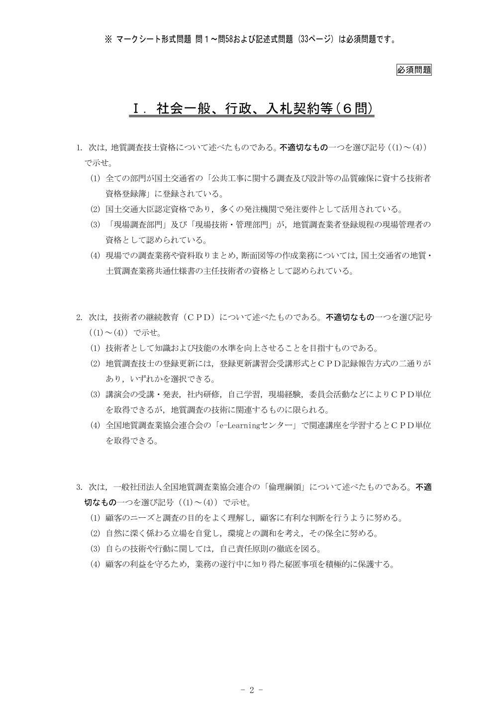
問2
必須
2. 次は，技術者の継続教育（ＣＰＤ）について述べたものである。不適切なもの一つを選び記号
（(1)～(4)）で示せ。
(1) 技術者として知識および技能の水準を向上させることを目指すものである。
(2) 地質調査技士の登録更新には，登録更新講習会受講形式とＣＰＤ記録報告方式の二通りが
あり，いずれかを選択できる。
(3) 講演会の受講・発表，社内研修，自己学習，現場経験，委員会活動などによりＣＰＤ単位
を取得できるが，地質調査の技術に関連するものに限られる。
(4) 全国地質調査業協会連合会の「e-Learningセンター」で関連講座を学習するとＣＰＤ単位
を取得できる。
図表・イラスト確認用：PDF紙面（2ページ）を表示
問3
必須
3. 次は，一般社団法人全国地質調査業協会連合の「倫理綱領」について述べたものである。不適
切なもの一つを選び記号（(1)～(4)）で示せ。
(1) 顧客のニーズと調査の目的をよく理解し，顧客に有利な判断を行うように努める。
(2) 自然に深く係わる立場を自覚し，環境との調和を考え，その保全に努める。
(3) 自らの技術や行動に関しては，自己責任原則の徹底を図る。
(4) 顧客の利益を守るため，業務の遂行中に知り得た秘匿事項を積極的に保護する。
- 3 -
必須問題
図表・イラスト確認用：PDF紙面（2ページ）を表示
問4
必須
4. 次は，「公共工事の品質確保の促進に関する法律」（品確法）について述べたものである。不
適切なもの一つを選び記号（(1)～(4)）で示せ。
(1) 公共工事の品質確保のみならず，公共工事に関する調査及び設計の品質確保も法に明記さ
れている。
(2) 外国企業の市場参入を促進するための環境整備が求められている。
(3) 平成26年の改正により，予定価格の適正な設定，低入札価格調査基準の設定等の発注者責
任が明確化された。
(4) 発注者による「歩切り」は，品確法違反となる。
図表・イラスト確認用：PDF紙面（3ページ）を表示
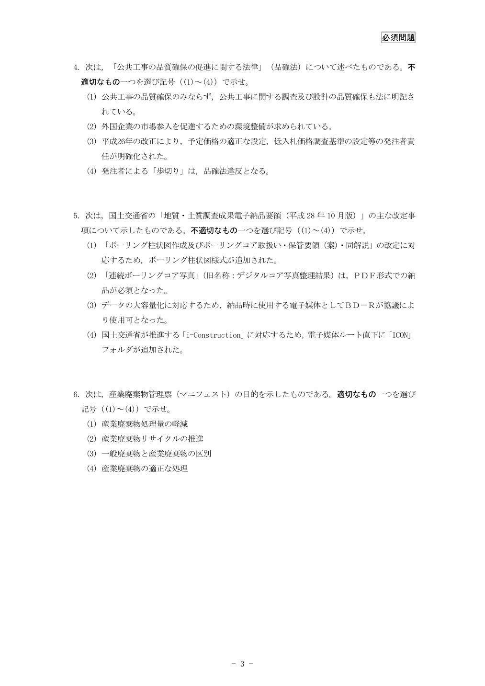
問5
必須
5. 次は，国土交通省の「地質・土質調査成果電子納品要領（平成28 年10 月版）」の主な改定事
項について示したものである。不適切なもの一つを選び記号（(1)～(4)）で示せ。
(1) 「ボーリング柱状図作成及びボーリングコア取扱い・保管要領（案）・同解説」の改定に対
応するため，ボーリング柱状図様式が追加された。
(2) 「連続ボーリングコア写真」（旧名称：デジタルコア写真整理結果）は，ＰＤＦ形式での納
品が必須となった。
(3) データの大容量化に対応するため，納品時に使用する電子媒体としてＢＤ－Ｒが協議によ
り使用可となった。
(4) 国土交通省が推進する「i-Construction」に対応するため，電子媒体ルート直下に「ICON」
フォルダが追加された。
図表・イラスト確認用：PDF紙面（3ページ）を表示
問6
必須
6. 次は，産業廃棄物管理票（マニフェスト）の目的を示したものである。適切なもの一つを選び
記号（(1)～(4)）で示せ。
(1) 産業廃棄物処理量の軽減
(2) 産業廃棄物リサイクルの推進
(3) 一般廃棄物と産業廃棄物の区別
(4) 産業廃棄物の適正な処理
- 4 -
必須問題
Ⅱ．地質、測量、土木、建築等の知識(８問)
図表・イラスト確認用：PDF紙面（3ページ）を表示
問7
必須
7. 下図は，種々の断層地形を模式的に示したものである。図のＡ～Ｄに当てはまる名称の適切な
組合せ一つを選び記号（(1)～(4)）で示せ。
注）図中の灰色の帯は，断層形成前に同一層準であった地層を示す。
記号
Ａ
Ｂ
Ｃ
Ｄ
(1)
(2)
(3)
(4)
逆 断 層
逆 断 層
正 断 層
正 断 層
正 断 層
正 断 層
逆 断 層
逆 断 層
左横ずれ断層
右横ずれ断層
右横ずれ断層
左横ずれ断層
右横ずれ断層
左横ずれ断層
左横ずれ断層
右横ずれ断層
図表・イラスト確認用：PDF紙面（4ページ）を表示
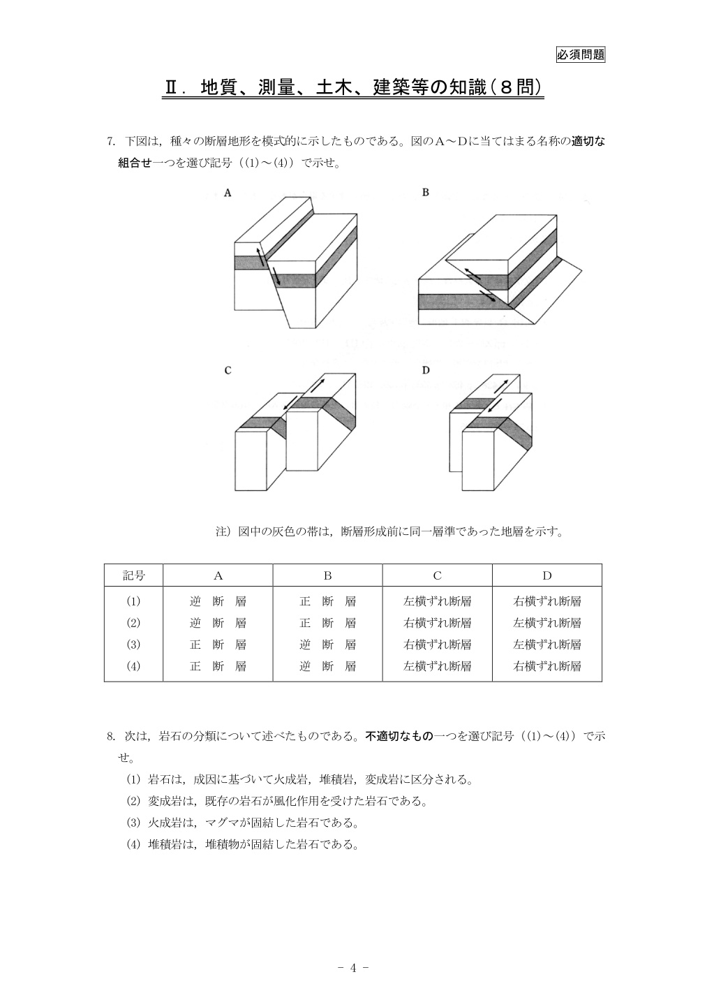
問8
必須
8. 次は，岩石の分類について述べたものである。不適切なもの一つを選び記号（(1)～(4)）で示
せ。
(1) 岩石は，成因に基づいて火成岩，堆積岩，変成岩に区分される。
(2) 変成岩は，既存の岩石が風化作用を受けた岩石である。
(3) 火成岩は，マグマが固結した岩石である。
(4) 堆積岩は，堆積物が固結した岩石である。
- 5 -
必須問題
図表・イラスト確認用：PDF紙面（4ページ）を表示
問9
必須
9. 次は，地震について述べたものである。不適切なもの一つを選び記号（(1)～(4)）で示せ。
(1) 地中深くの岩盤が破壊されることによって起こるゆれを地震という。
(2) 地中深くにおいて，地震の原因となる急激な岩盤破壊の起こった場所を震源という。
(3) 震度は，ある地点におけるゆれの強さを表したものである。
(4) 震源から地上に最初に到達する地震波は，Ｓ波（横波）である。
図表・イラスト確認用：PDF紙面（5ページ）を表示
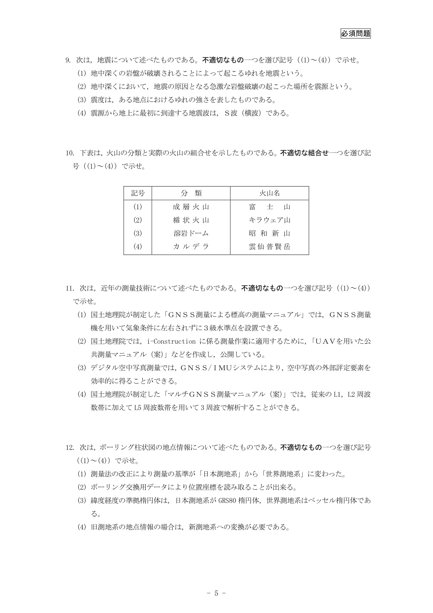
問10
必須
10. 下表は，火山の分類と実際の火山の組合せを示したものである。不適切な組合せ一つを選び記
号（(1)～(4)）で示せ。
記号
分 類
火山名
(1)
(2)
(3)
(4)
成層火山
楯状火山
溶岩ドーム
カルデラ
富
士
山
キラウェア山
昭和新山
雲仙普賢岳
図表・イラスト確認用：PDF紙面（5ページ）を表示
問11
必須
11. 次は，近年の測量技術について述べたものである。不適切なもの一つを選び記号（(1)～(4)）
で示せ。
(1) 国土地理院が制定した「ＧＮＳＳ測量による標高の測量マニュアル」では，ＧＮＳＳ測量
機を用いて気象条件に左右されずに３級水準点を設置できる。
(2) 国土地理院では，i-Construction に係る測量作業に適用するために，「ＵＡＶを用いた公
共測量マニュアル（案）」などを作成し，公開している。
(3) デジタル空中写真測量では，ＧＮＳＳ/ＩＭＵシステムにより，空中写真の外部評定要素を
効率的に得ることができる。
(4) 国土地理院が制定した「マルチＧＮＳＳ測量マニュアル（案）」では，従来のL1，L2 周波
数帯に加えてL5 周波数帯を用いて3 周波で解析することができる。
図表・イラスト確認用：PDF紙面（5ページ）を表示
問12
必須
12. 次は，ボーリング柱状図の地点情報について述べたものである。不適切なもの一つを選び記号
（(1)～(4)）で示せ。
(1) 測量法の改正により測量の基準が「日本測地系」から「世界測地系」に変わった。
(2) ボーリング交換用データにより位置座標を読み取ることが出来る。
(3) 緯度経度の準拠楕円体は，日本測地系がGRS80 楕円体，世界測地系はベッセル楕円体であ
る。
(4) 旧測地系の地点情報の場合は，新測地系への変換が必要である。
- 6 -
必須問題
図表・イラスト確認用：PDF紙面（5ページ）を表示
問13
必須
13. 次は，地球環境問題について述べたものである。不適切なもの一つを選び記号（(1)～(4)）で
示せ。
(1) 日本では，一般的にｐＨ4.0 以下の降水を酸性雨という。
(2) オゾン層破壊の主な原因は，フロンガスに含まれる塩素である。
(3) 温室効果ガスの放出による地球温暖化の影響は，海面上昇や凍土融解などに及んでいる。
(4) 人間活動の拡大に伴う生物多様性の減少も，地球環境問題のひとつとして捉えられている。
図表・イラスト確認用：PDF紙面（6ページ）を表示
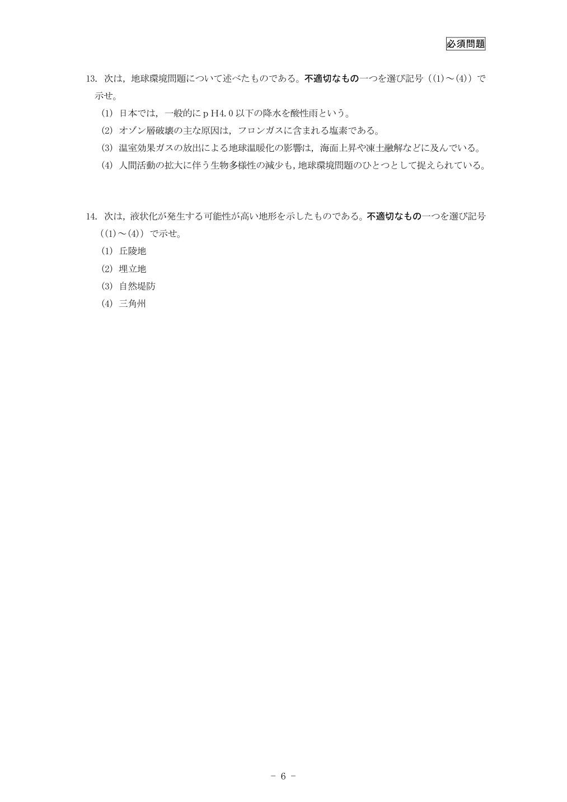
問14
必須
14. 次は，液状化が発生する可能性が高い地形を示したものである。不適切なもの一つを選び記号
（(1)～(4)）で示せ。
(1) 丘陵地
(2) 埋立地
(3) 自然堤防
(4) 三角州
- 7 -
必須問題
Ⅲ．現場技術の知識(３２問)
図表・イラスト確認用：PDF紙面（6ページ）を表示
問15
必須
15. 次は，スピンドル型油圧フィード式ボーリングマシンの基本構造とその機能について述べたも
のである。文章中の空欄Ａ～Ｄに当てはまる語句の適切な組合せ一つを選び記号（(1)～(4)）で
示せ。
ボーリングマシンの主な装置は，ドリルストリングス（ロッド他掘削用ツールス）などを揚降
するための Ａ ，せん孔装置と巻揚装置に適切な回転数を供給する Ｂ ，スピンドル
に回転と推力を伝達するための Ｃ ，原動機からの動力を伝える Ｄ ，油圧装置およ
び操作装置などで構成されている。
記号
Ａ
Ｂ
Ｃ
Ｄ
(1)
(2)
(3)
(4)
変速装置
伝達装置
巻揚装置
せん孔装置
せん孔装置
巻揚装置
変速装置
伝達装置
伝達装置
変速装置
せん孔装置
巻揚装置
巻揚装置
せん孔装置
伝達装置
変速装置
図表・イラスト確認用：PDF紙面（7ページ）を表示
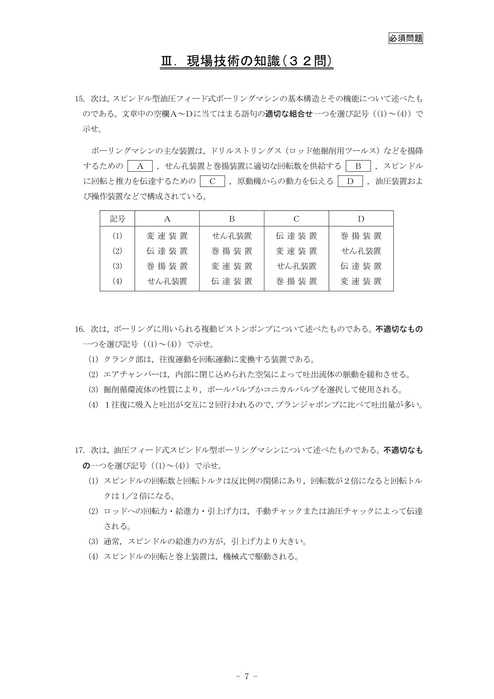
問16
必須
16. 次は，ボーリングに用いられる複動ピストンポンプについて述べたものである。不適切なもの
一つを選び記号（(1)～(4)）で示せ。
(1) クランク部は，往復運動を回転運動に変換する装置である。
(2) エアチャンバーは，内部に閉じ込められた空気によって吐出流体の脈動を緩和させる。
(3) 掘削循環流体の性質により，ボールバルブかコニカルバルブを選択して使用される。
(4) １往復に吸入と吐出が交互に２回行われるので，プランジャポンプに比べて吐出量が多い。
図表・イラスト確認用：PDF紙面（7ページ）を表示
問17
必須
17. 次は，油圧フィード式スピンドル型ボーリングマシンについて述べたものである。不適切なも
の一つを選び記号（(1)～(4)）で示せ。
(1) スピンドルの回転数と回転トルクは反比例の関係にあり，回転数が２倍になると回転トル
クは1／2 倍になる。
(2) ロッドへの回転力・給進力・引上げ力は，手動チャックまたは油圧チャックによって伝達
される。
(3) 通常，スピンドルの給進力の方が，引上げ力より大きい。
(4) スピンドルの回転と巻上装置は，機械式で駆動される。
- 8 -
必須問題
図表・イラスト確認用：PDF紙面（7ページ）を表示
問18
必須
18. 次は，複動ピストンポンプについて述べたものである。文章中の空欄Ａ～Ｄに当てはまる語句
の適切な組合せ一つを選び記号（(1)～(4)）で示せ。
複動ピストンポンプは，入力軸およびギヤの回転運動を Ａ およびコネクティングロッド
の機構によりピストンに Ｂ を与えている。入力軸およびギヤは Ｃ して回転してい
るが，ピストン速度は常に変化しており，行程の両端において速度はゼロとなり，中央において
は Ｄ となる。
記号
Ａ
Ｂ
Ｃ
Ｄ
(1)
(2)
(3)
(4)
変速装置
クランク
変速装置
クランク
上下運動
往復運動
上下運動
往復運動
加 速
一 定
加 速
一 定
最 大
最 小
最 小
最 大
図表・イラスト確認用：PDF紙面（8ページ）を表示
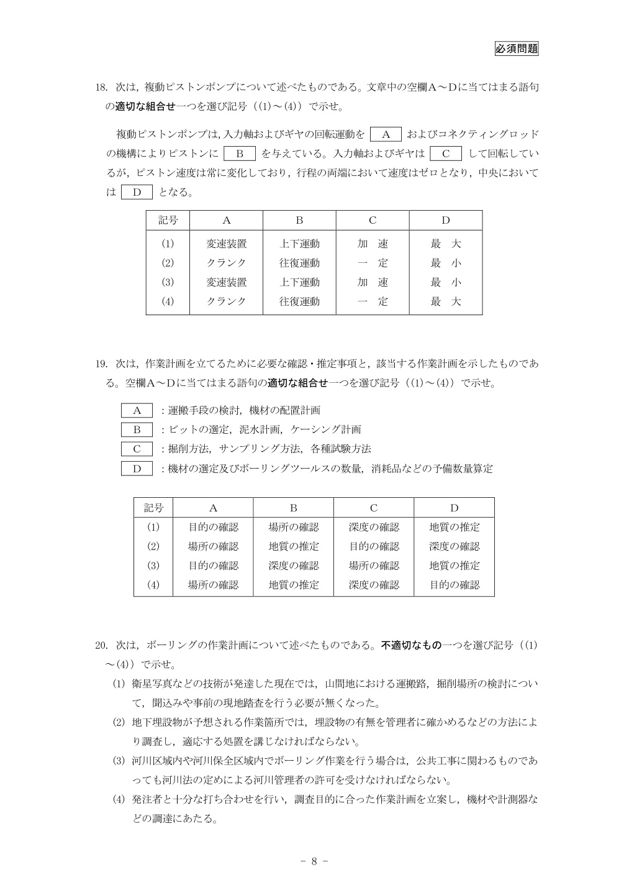
問19
必須
19. 次は，作業計画を立てるために必要な確認・推定事項と，該当する作業計画を示したものであ
る。空欄Ａ～Ｄに当てはまる語句の適切な組合せ一つを選び記号（(1)～(4)）で示せ。
Ａ ：運搬手段の検討，機材の配置計画
Ｂ ：ビットの選定，泥水計画，ケーシング計画
Ｃ ：掘削方法，サンプリング方法，各種試験方法
Ｄ ：機材の選定及びボーリングツールスの数量，消耗品などの予備数量算定
記号
Ａ
Ｂ
Ｃ
Ｄ
(1)
(2)
(3)
(4)
目的の確認
場所の確認
目的の確認
場所の確認
場所の確認
地質の推定
深度の確認
地質の推定
深度の確認
目的の確認
場所の確認
深度の確認
地質の推定
深度の確認
地質の推定
目的の確認
図表・イラスト確認用：PDF紙面（8ページ）を表示
問20
必須
20. 次は，ボーリングの作業計画について述べたものである。不適切なもの一つを選び記号（(1)
～(4)）で示せ。
(1) 衛星写真などの技術が発達した現在では，山間地における運搬路，掘削場所の検討につい
て，聞込みや事前の現地踏査を行う必要が無くなった。
(2) 地下埋設物が予想される作業箇所では，埋設物の有無を管理者に確かめるなどの方法によ
り調査し，適応する処置を講じなければならない。
(3) 河川区域内や河川保全区域内でボーリング作業を行う場合は，公共工事に関わるものであ
っても河川法の定めによる河川管理者の許可を受けなければならない。
(4) 発注者と十分な打ち合わせを行い，調査目的に合った作業計画を立案し，機材や計測器な
どの調達にあたる。
- 9 -
必須問題
図表・イラスト確認用：PDF紙面（8ページ）を表示
問21
必須
21. 次は，運搬計画について述べたものである。文章中の空欄Ａ～Ｄに当てはまる語句の適切な組
合せ一つを選び記号（(1)～(4)）で示せ。
掘削仕様が決まると調査に必要な機材の規格・数量などが決定される。これらの機材は大きな
ものは Ａ から小さなものは Ｂ に至るまで，全機材をもれなく現地に運搬しなけれ
ばならない。そのためには Ｃ を作成し，機材の数量・重量・容積および Ｄ を記載
し，トラック積載計画を立て，ボーリング調査開始後の機材不足を避ける。
記号
Ａ
Ｂ
Ｃ
Ｄ
(1)
(2)
(3)
(4)
ボーリングロッド
ボーリングマシン
ボーリングロッド
ボーリングマシン
原動機
消耗品・工具
消耗品・工具
原動機
工程表
チェックリスト
チェックリスト
工程表
総重量
総重量
分解重量
分解重量
図表・イラスト確認用：PDF紙面（9ページ）を表示
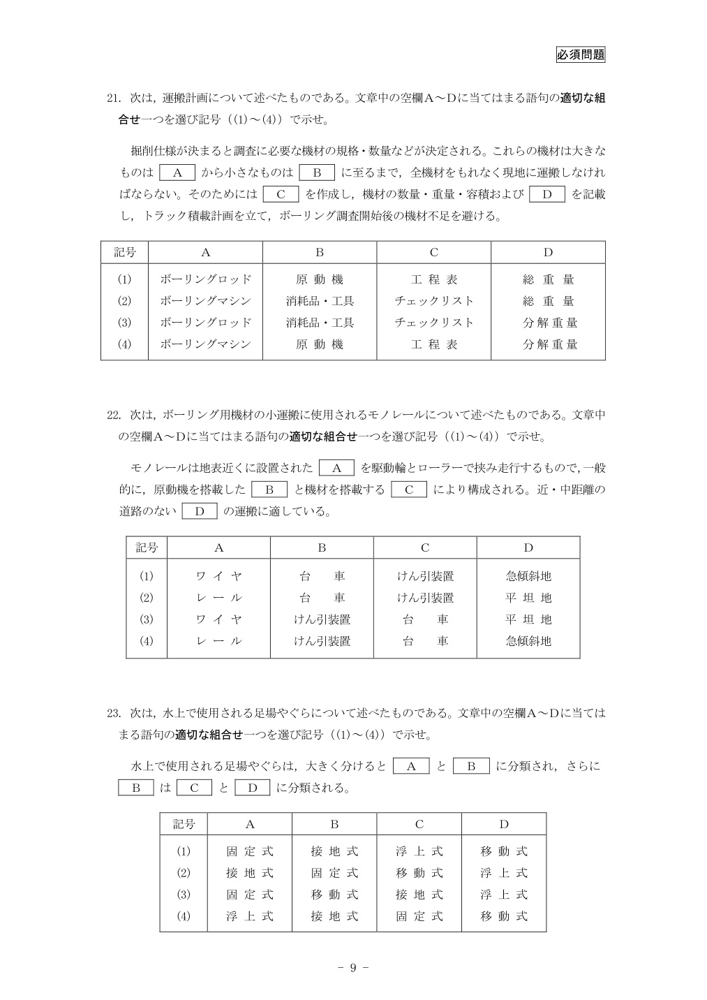
問22
必須
22. 次は，ボーリング用機材の小運搬に使用されるモノレールについて述べたものである。文章中
の空欄Ａ～Ｄに当てはまる語句の適切な組合せ一つを選び記号（(1)～(4)）で示せ。
モノレールは地表近くに設置された Ａ を駆動輪とローラーで挟み走行するもので，一般
的に，原動機を搭載した Ｂ と機材を搭載する Ｃ により構成される。近・中距離の
道路のない Ｄ の運搬に適している。
記号
Ａ
Ｂ
Ｃ
Ｄ
(1)
(2)
(3)
(4)
ワイヤ
レール
ワイヤ
レール
台 車
台 車
けん引装置
けん引装置
けん引装置
けん引装置
台 車
台 車
急傾斜地
平坦地
平坦地
急傾斜地
図表・イラスト確認用：PDF紙面（9ページ）を表示
問23
必須
23. 次は，水上で使用される足場やぐらについて述べたものである。文章中の空欄Ａ～Ｄに当ては
まる語句の適切な組合せ一つを選び記号（(1)～(4)）で示せ。
水上で使用される足場やぐらは，大きく分けると Ａ と Ｂ に分類され，さらに
Ｂ は Ｃ と Ｄ に分類される。
記号
Ａ
Ｂ
Ｃ
Ｄ
(1)
(2)
(3)
(4)
固定式
接地式
固定式
浮上式
接地式
固定式
移動式
接地式
浮上式
移動式
接地式
固定式
移動式
浮上式
浮上式
移動式
- 10 -
必須問題
図表・イラスト確認用：PDF紙面（9ページ）を表示
問24
必須
24. 次は，ボーリングで使用する泥水の備えるべき条件を述べたものである。不適切なもの一つを
選び記号（(1)～(4)）で示せ。
(1) 温度，圧力に対する安定性が優れている。
(2) 地層の崩壊抑制や泥化抑制機能が優れている。
(3) 泥水比重は地層圧力とバランスした適正値である。
(4) ベントナイト等の低比重固形物の含有量が適量で，砂分が多い。
図表・イラスト確認用：PDF紙面（10ページ）を表示
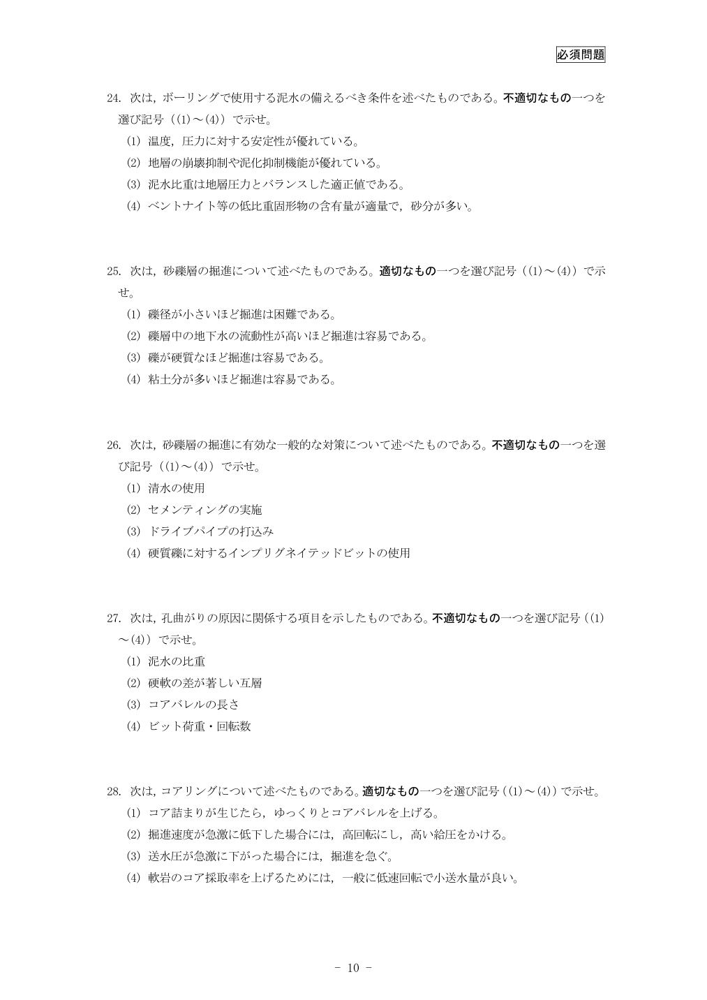
問25
必須
25. 次は，砂礫層の掘進について述べたものである。適切なもの一つを選び記号（(1)～(4)）で示
せ。
(1) 礫径が小さいほど掘進は困難である。
(2) 礫層中の地下水の流動性が高いほど掘進は容易である。
(3) 礫が硬質なほど掘進は容易である。
(4) 粘土分が多いほど掘進は容易である。
図表・イラスト確認用：PDF紙面（10ページ）を表示
問26
必須
26. 次は，砂礫層の掘進に有効な一般的な対策について述べたものである。不適切なもの一つを選
び記号（(1)～(4)）で示せ。
(1) 清水の使用
(2) セメンティングの実施
(3) ドライブパイプの打込み
(4) 硬質礫に対するインプリグネイテッドビットの使用
図表・イラスト確認用：PDF紙面（10ページ）を表示
問27
必須
27. 次は，孔曲がりの原因に関係する項目を示したものである。不適切なもの一つを選び記号（(1)
～(4)）で示せ。
(1) 泥水の比重
(2) 硬軟の差が著しい互層
(3) コアバレルの長さ
(4) ビット荷重・回転数
図表・イラスト確認用：PDF紙面（10ページ）を表示
問28
必須
28. 次は，コアリングについて述べたものである。適切なもの一つを選び記号（(1)～(4)）で示せ。
(1) コア詰まりが生じたら，ゆっくりとコアバレルを上げる。
(2) 掘進速度が急激に低下した場合には，高回転にし，高い給圧をかける。
(3) 送水圧が急激に下がった場合には，掘進を急ぐ。
(4) 軟岩のコア採取率を上げるためには，一般に低速回転で小送水量が良い。
- 11 -
必須問題
図表・イラスト確認用：PDF紙面（10ページ）を表示
問29
必須
29. 次は，カッティングス排除について述べたものである。不適切なもの一つを選び記号（(1)～(4)）
で示せ。
(1) 一般に比重の高い泥水の方が，低い泥水よりも排除能力が高い。
(2) ビットの回転数が増加するほど，排除能力が高くなる。
(3) 孔内泥水の上昇速度が増加するほど，排除能力が高くなる。
(4) 送水量が同じ場合，清水の方が泥水よりも排除能力が低い。
図表・イラスト確認用：PDF紙面（11ページ）を表示
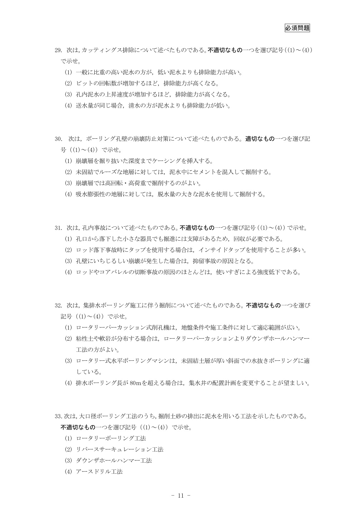
問30
必須
30. 次は，ボーリング孔壁の崩壊防止対策について述べたものである。適切なもの一つを選び記
号（(1)～(4)）で示せ。
(1) 崩壊層を掘り抜いた深度までケーシングを挿入する。
(2) 未固結でルーズな地層に対しては，泥水中にセメントを混入して掘削する。
(3) 崩壊層では高回転・高荷重で掘削するのがよい。
(4) 吸水膨張性の地層に対しては，脱水量の大きな泥水を使用して掘削する。
図表・イラスト確認用：PDF紙面（11ページ）を表示
問31
必須
31. 次は，孔内事故について述べたものである。不適切なもの一つを選び記号（(1)～(4)）で示せ。
(1) 孔口から落下した小さな器具でも掘進には支障があるため，回収が必要である。
(2) ロッド落下事故時にタップを使用する場合は，インサイドタップを使用することが多い。
(3) 孔壁にいちじるしい崩壊が発生した場合は，抑留事故の原因となる。
(4) ロッドやコアバレルの切断事故の原因のほとんどは，使いすぎによる強度低下である。
図表・イラスト確認用：PDF紙面（11ページ）を表示
問32
必須
32. 次は，集排水ボーリング施工に伴う掘削について述べたものである。不適切なもの一つを選び
記号（(1)～(4)）で示せ。
(1) ロータリーパーカッション式削孔機は，地盤条件や施工条件に対して適応範囲が広い。
(2) 粘性土や軟岩が分布する場合は，ロータリーパーカッションよりダウンザホールハンマー
工法の方がよい。
(3) ロータリー式水平ボーリングマシンは，未固結土層が厚い斜面での水抜きボーリングに適
している。
(4) 排水ボーリング長が80ｍを超える場合は，集水井の配置計画を変更することが望ましい。
図表・イラスト確認用：PDF紙面（11ページ）を表示
問33
必須
33．次は，大口径ボーリング工法のうち，掘削土砂の排出に泥水を用いる工法を示したものである。
不適切なもの一つを選び記号（(1)～(4)）で示せ。
(1) ロータリーボーリング工法
(2) リバースサーキュレーション工法
(3) ダウンザホールハンマー工法
(4) アースドリル工法
- 12 -
必須問題
図表・イラスト確認用：PDF紙面（11ページ）を表示
問34
必須
34. 次は,標準貫入試験（JIS A 1219：2013）について述べたものである。適切なもの一つを選び
記号（(1)～(4)）で示せ。
(1) 乱れの少ない試料採取を兼ねている。
(2) エキステンションロッド式サンプラーを用いる。
(3) 試験に先立ってボーリング孔底のカッティングスを除去する。
(4) 試験孔に孔曲りがあっても試験値に影響を与えることはない。
図表・イラスト確認用：PDF紙面（12ページ）を表示
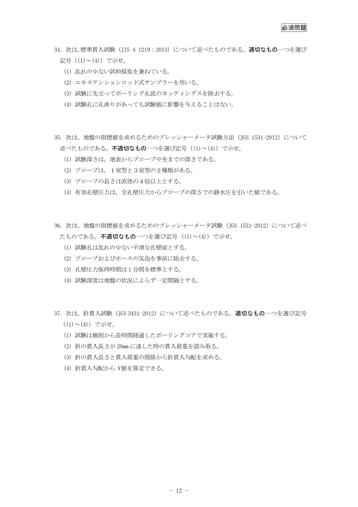
問35
必須
35. 次は，地盤の指標値を求めるためのプレッシャーメータ試験方法（JGS 1531-2012）について
述べたものである。不適切なもの一つを選び記号（(1)～(4)）で示せ。
(1) 試験深さは，地表からプローブ中央までの深さである。
(2) プローブは，１室型と３室型の２種類がある。
(3) プローブの長さは直径の４倍以上とする。
(4) 有効孔壁圧力は，全孔壁圧力からプローブの深さでの静水圧を引いた値である。
図表・イラスト確認用：PDF紙面（12ページ）を表示
問36
必須
36. 次は，地盤の指標値を求めるためのプレッシャーメータ試験（JGS 1531-2012）について述べ
たものである。不適切なもの一つを選び記号（(1)～(4)）で示せ。
(1) 試験孔は乱れの少ない平滑な孔壁面とする。
(2) プローブおよびホースの気泡を事前に除去する。
(3) 孔壁圧力保持時間は1 分間を標準とする。
(4) 試験深度は地盤の状況によらず一定間隔とする。
図表・イラスト確認用：PDF紙面（12ページ）を表示
問37
必須
37. 次は，針貫入試験（JGS 3431-2012）について述べたものである。適切なもの一つを選び記号
（(1)～(4)）で示せ。
(1) 試験は掘削から長時間経過したボーリングコアで実施する。
(2) 針の貫入長さが20mm に達した時の貫入荷重を読み取る。
(3) 針の貫入長さと貫入荷重の関係から針貫入勾配を求める。
(4) 針貫入勾配からN 値を算定できる。
- 13 -
必須問題
図表・イラスト確認用：PDF紙面（12ページ）を表示
問38
必須
38. 下表は，試験法の特徴とその適用を示したものである。不適切な組合せ一つを選び記号（(1)
～(4)）で示せ。
図表・イラスト確認用：PDF紙面（13ページ）を表示
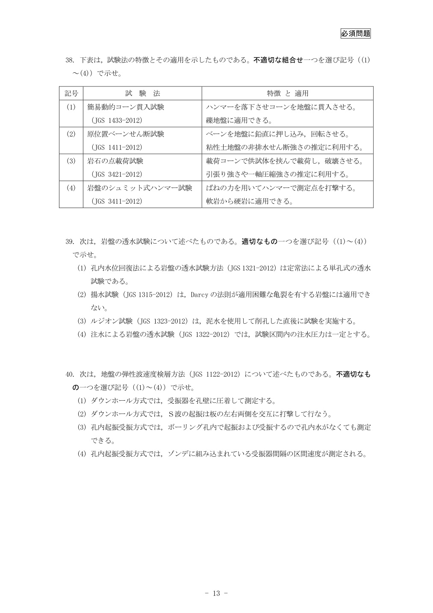
問39
必須
39. 次は，岩盤の透水試験について述べたものである。適切なもの一つを選び記号（(1)～(4)）
で示せ。
(1) 孔内水位回復法による岩盤の透水試験方法（JGS 1321-2012）は定常法による単孔式の透水
試験である。
(2) 揚水試験（JGS 1315-2012）は，Darcy の法則が適用困難な亀裂を有する岩盤には適用でき
ない。
(3) ルジオン試験（JGS 1323-2012）は，泥水を使用して削孔した直後に試験を実施する。
(4) 注水による岩盤の透水試験（JGS 1322-2012）では，試験区間内の注水圧力は一定とする。
図表・イラスト確認用：PDF紙面（13ページ）を表示
問40
必須
40. 次は，地盤の弾性波速度検層方法（JGS 1122-2012）について述べたものである。不適切なも
の一つを選び記号（(1)～(4)）で示せ。
(1) ダウンホール方式では，受振器を孔壁に圧着して測定する。
(2) ダウンホール方式では，Ｓ波の起振は板の左右両側を交互に打撃して行なう。
(3) 孔内起振受振方式では，ボーリング孔内で起振および受振するので孔内水がなくても測定
できる。
(4) 孔内起振受振方式では，ゾンデに組み込まれている受振器間隔の区間速度が測定される。
記号
試 験 法
特徴 と 適用
(1)
簡易動的コーン貫入試験
（JGS 1433-2012）
ハンマーを落下させコーンを地盤に貫入させる。
礫地盤に適用できる。
(2)
原位置ベーンせん断試験
（JGS 1411-2012）
ベーンを地盤に鉛直に押し込み，回転させる。
粘性土地盤の非排水せん断強さの推定に利用する。
(3)
岩石の点載荷試験
（JGS 3421-2012）
載荷コーンで供試体を挟んで載荷し，破壊させる。
引張り強さや一軸圧縮強さの推定に利用する。
(4)
岩盤のシュミット式ハンマー試験
（JGS 3411-2012）
ばねの力を用いてハンマーで測定点を打撃する。
軟岩から硬岩に適用できる。
- 14 -
必須問題
図表・イラスト確認用：PDF紙面（13ページ）を表示
問41
必須
41. 次は，我が国に分布するローカルソイルなどの名称とその特徴について示したものである。不
適切なもの一つを選び記号（(1)～(4)）で示せ。
図表・イラスト確認用：PDF紙面（14ページ）を表示
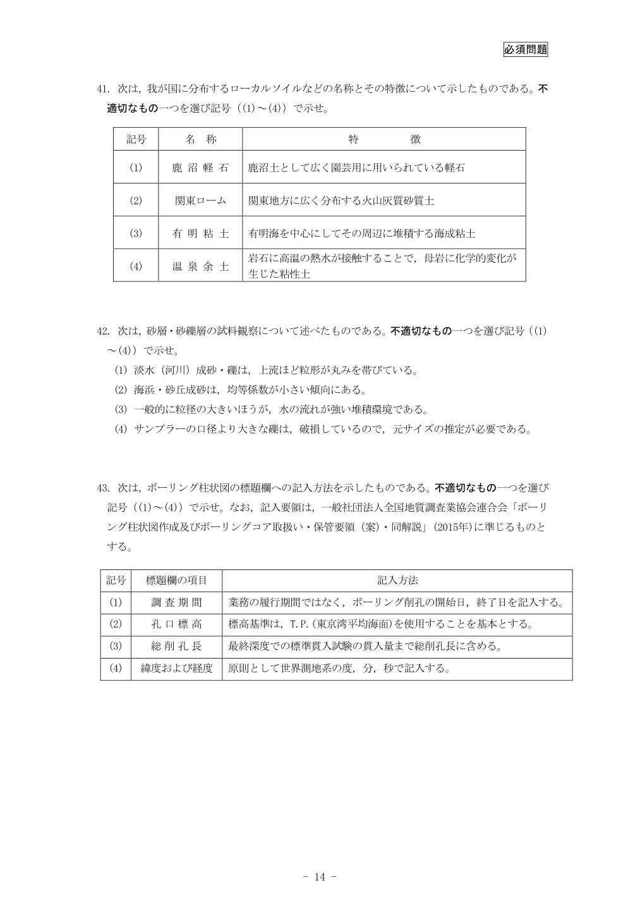
問42
必須
42. 次は，砂層・砂礫層の試料観察について述べたものである。不適切なもの一つを選び記号（(1)
～(4)）で示せ。
(1) 淡水（河川）成砂・礫は，上流ほど粒形が丸みを帯びている。
(2) 海浜・砂丘成砂は，均等係数が小さい傾向にある。
(3) 一般的に粒径の大きいほうが，水の流れが強い堆積環境である。
(4) サンプラーの口径より大きな礫は，破損しているので，元サイズの推定が必要である。
図表・イラスト確認用：PDF紙面（14ページ）を表示
問43
必須
43. 次は，ボーリング柱状図の標題欄への記入方法を示したものである。不適切なもの一つを選び
記号（(1)～(4)）で示せ。なお，記入要領は，一般社団法人全国地質調査業協会連合会「ボーリ
ング柱状図作成及びボーリングコア取扱い・保管要領（案）・同解説」(2015年)に準じるものと
する。
記号
標題欄の項目
記入方法
(1)
調査期間
業務の履行期間ではなく，ボーリング削孔の開始日，終了日を記入する。
(2)
孔口標高
標高基準は，T.P.(東京湾平均海面)を使用することを基本とする。
(3)
総削孔長
最終深度での標準貫入試験の貫入量まで総削孔長に含める。
(4)
緯度および経度
原則として世界測地系の度，分，秒で記入する。
記号
名 称
特 徴
(1)
鹿沼軽石
鹿沼土として広く園芸用に用いられている軽石
(2)
関東ローム
関東地方に広く分布する火山灰質砂質土
(3)
有明粘土
有明海を中心にしてその周辺に堆積する海成粘土
(4)
温泉余土
岩石に高温の熱水が接触することで，母岩に化学的変化が
生じた粘性土
- 15 -
必須問題
図表・イラスト確認用：PDF紙面（14ページ）を表示
問44
必須
44. 下図は,地層および混入物の位置関係を示したものである。これらの位置関係を表現した文章
として適切なもの一つを選び記号（(1)～(4)）で示せ。
(1) 砂層はシルト層の上部に位置する。
(2) 砂層の下位にはシルト層が堆積する。
(3) シルト層の下部に砂礫層が堆積する。
(4) シルト層の上位に貝殻片を多く含む。
図表・イラスト確認用：PDF紙面（15ページ）を表示
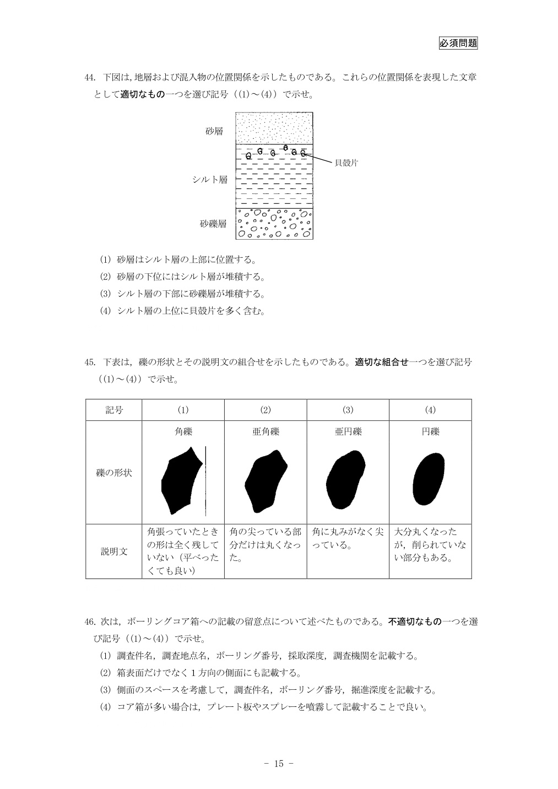
問45
必須
45. 下表は，礫の形状とその説明文の組合せを示したものである。適切な組合せ一つを選び記号
（(1)～(4)）で示せ。
記号
(1)
(2)
(3)
(4)
礫の形状
角礫
亜角礫
亜円礫
円礫
説明文
角張っていたとき
の形は全く残して
いない（平べった
くても良い）
角の尖っている部
分だけは丸くなっ
た。
角に丸みがなく尖
っている。
大分丸くなった
が，削られていな
い部分もある。
図表・イラスト確認用：PDF紙面（15ページ）を表示
問46
必須
46. 次は，ボーリングコア箱への記載の留意点について述べたものである。不適切なもの一つを選
び記号（(1)～(4)）で示せ。
(1) 調査件名，調査地点名，ボーリング番号，採取深度，調査機関を記載する。
(2) 箱表面だけでなく１方向の側面にも記載する。
(3) 側面のスペースを考慮して，調査件名，ボーリング番号，掘進深度を記載する。
(4) コア箱が多い場合は，プレート板やスプレーを噴霧して記載することで良い。
砂層
シルト層
砂礫層
貝殻片
- 16 -
必須問題
Ⅳ．調査技術の理解度(４問)
図表・イラスト確認用：PDF紙面（15ページ）を表示
問47
必須
47. 次は，屈折法地震探査について述べたものである。適切なもの一つを選び記号（(1)～(4)）で
示せ。
(1) 各層の速度は，深部ほど遅いことが速度層解析の前提となっている。
(2) どんなに薄い破砕帯でも解析できる利点がある。
(3) Ｐ波速度はN値との相関が良好であるので，連続した支持層分布が把握できる。
(4) 薄い中間層は，速度層として解析できない場合がある。
図表・イラスト確認用：PDF紙面（16ページ）を表示
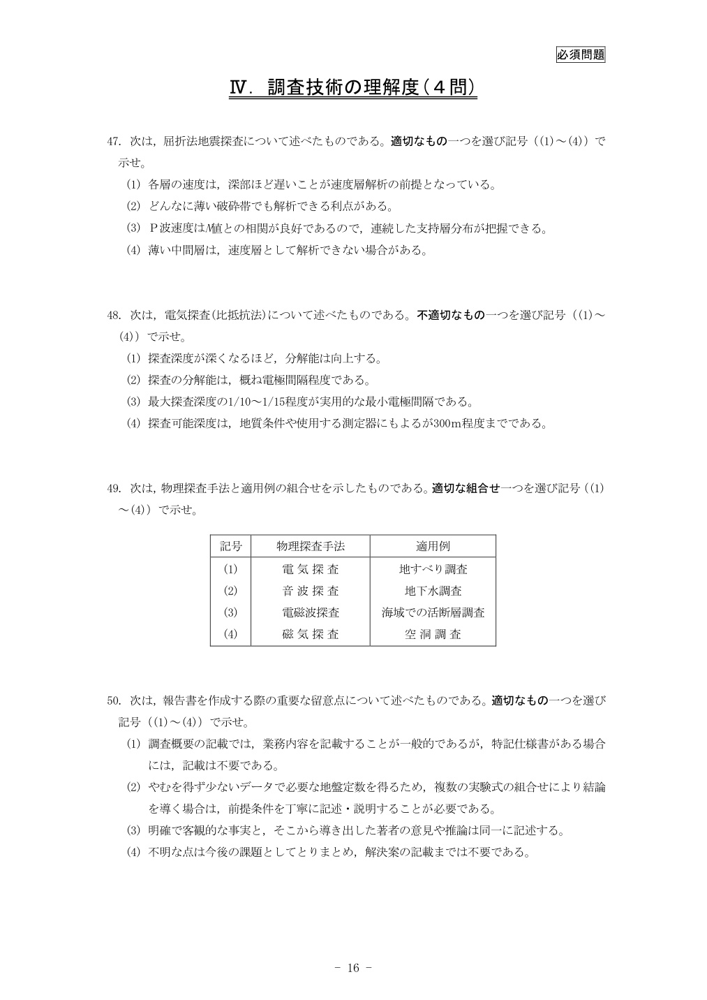
問48
必須
48. 次は，電気探査(比抵抗法)について述べたものである。不適切なもの一つを選び記号（(1)～
(4)）で示せ。
(1) 探査深度が深くなるほど，分解能は向上する。
(2) 探査の分解能は，概ね電極間隔程度である。
(3) 最大探査深度の1/10～1/15程度が実用的な最小電極間隔である。
(4) 探査可能深度は，地質条件や使用する測定器にもよるが300ｍ程度までである。
図表・イラスト確認用：PDF紙面（16ページ）を表示
問49
必須
49. 次は，物理探査手法と適用例の組合せを示したものである。適切な組合せ一つを選び記号（(1)
～(4)）で示せ。
記号
物理探査手法
適用例
(1)
(2)
(3)
(4)
電気探査
音波探査
電磁波探査
磁気探査
地すべり調査
地下水調査
海域での活断層調査
空洞調査
図表・イラスト確認用：PDF紙面（16ページ）を表示
問50
必須
50. 次は，報告書を作成する際の重要な留意点について述べたものである。適切なもの一つを選び
記号（(1)～(4)）で示せ。
(1) 調査概要の記載では，業務内容を記載することが一般的であるが，特記仕様書がある場合
には，記載は不要である。
(2) やむを得ず少ないデータで必要な地盤定数を得るため，複数の実験式の組合せにより結論
を導く場合は，前提条件を丁寧に記述・説明することが必要である。
(3) 明確で客観的な事実と，そこから導き出した著者の意見や推論は同一に記述する。
(4) 不明な点は今後の課題としてとりまとめ，解決案の記載までは不要である。
- 17 -
必須問題
Ⅴ．管理技法(８問)
図表・イラスト確認用：PDF紙面（16ページ）を表示
問51
必須
51. 平成30年3月に「無人航空機（ドローン・ラジコン機など）の安全な飛行のためのガイドライ
ン」が国土交通省航空局から発表された。以下は，その中に示された項目を示したものである。
不適切なもの一つを選び記号（(1)～(4)）で示せ。
(1) 航空法では，地表面から150ｍ以上の高さの地域，空港周辺の空域，人口集中地区の上空
に無人航空機を飛行させることを原則禁止している。
(2) マルチコプターやラジコン機などであっても重量が200g 未満のものは無人航空機に分類
されないため，航空法の対象外である。
(3) 河川敷で無人航空機を飛行させるには，河川法により許可の取得が必要である。
(4) 第三者や物件との間に30ｍの距離を保って飛行させるなど，一定のルールを守れば誰でも
無人航空機を飛行させることができる。
図表・イラスト確認用：PDF紙面（17ページ）を表示
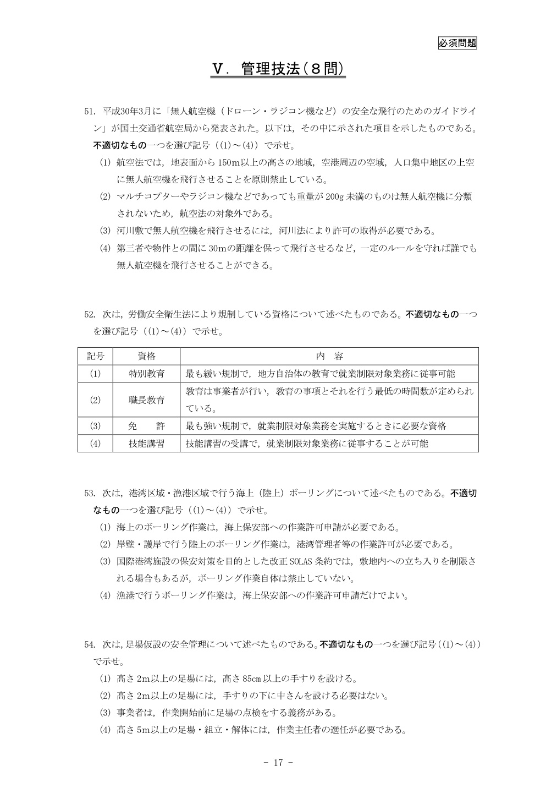
問52
必須
52. 次は，労働安全衛生法により規制している資格について述べたものである。不適切なもの一つ
を選び記号（(1)～(4)）で示せ。
記号
資格
内 容
(1)
特別教育
最も緩い規制で，地方自治体の教育で就業制限対象業務に従事可能
(2)
職長教育
教育は事業者が行い，教育の事項とそれを行う最低の時間数が定められ
ている。
(3)
免
許
最も強い規制で，就業制限対象業務を実施するときに必要な資格
(4)
技能講習
技能講習の受講で，就業制限対象業務に従事することが可能
図表・イラスト確認用：PDF紙面（17ページ）を表示
問53
必須
53. 次は，港湾区域・漁港区域で行う海上（陸上）ボーリングについて述べたものである。不適切
なもの一つを選び記号（(1)～(4)）で示せ。
(1) 海上のボーリング作業は，海上保安部への作業許可申請が必要である。
(2) 岸壁・護岸で行う陸上のボーリング作業は，港湾管理者等の作業許可が必要である。
(3) 国際港湾施設の保安対策を目的とした改正SOLAS 条約では，敷地内への立ち入りを制限さ
れる場合もあるが，ボーリング作業自体は禁止していない。
(4) 漁港で行うボーリング作業は，海上保安部への作業許可申請だけでよい。
図表・イラスト確認用：PDF紙面（17ページ）を表示
問54
必須
54. 次は，足場仮設の安全管理について述べたものである。不適切なもの一つを選び記号（(1)～(4)）
で示せ。
(1) 高さ2ｍ以上の足場には，高さ85cm 以上の手すりを設ける。
(2) 高さ2ｍ以上の足場には，手すりの下に中さんを設ける必要はない。
(3) 事業者は，作業開始前に足場の点検をする義務がある。
(4) 高さ5ｍ以上の足場・組立・解体には，作業主任者の選任が必要である。
- 18 -
必須問題
図表・イラスト確認用：PDF紙面（17ページ）を表示
問55
必須
55. 次は，安全管理におけるリスクアセスメントについて述べたものである。不適切なもの一つを
選び記号（(1)～(4)）で示せ。
(1) リスクアセスメントにおける「危険状態」とは，危険源と人が同時に存在する状態をいう。
(2) リスクアセスメントにおけるスリーステップメソッドとは，リスクを低減する手順や方法
をまとめたものである。
(3) リスクアセスメントとは，事故の可能性と事故の大きさがどこに潜んでいるかを調査（洗
い出し・見積り・評価）し，リスク低減対策を実施することである。
(4) 使用者が間違った使い方をした際に発生する危険を防止するための対応は，リスクアセス
メントに含まれない。
図表・イラスト確認用：PDF紙面（18ページ）を表示
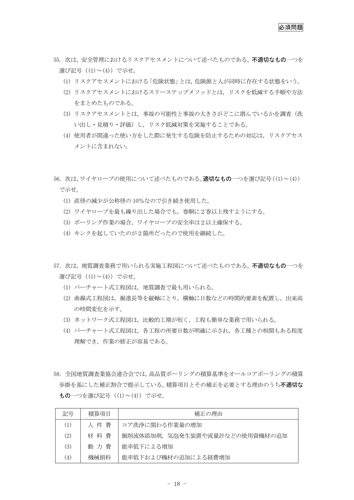
問56
必須
56. 次は，ワイヤロープの使用について述べたものである。適切なもの一つを選び記号（(1)～(4)）
で示せ。
(1) 直径の減少が公称径の10％なので引き続き使用した。
(2) ワイヤロープを最も繰り出した場合でも，巻胴に２巻以上残すようにする。
(3) ボーリング作業の場合，ワイヤロープの安全率は２以上確保する。
(4) キンクを起していたのが２箇所だったので使用を継続した。
図表・イラスト確認用：PDF紙面（18ページ）を表示
問57
必須
57. 次は，地質調査業務で用いられる実施工程図について述べたものである。不適切なもの一つを
選び記号（(1)～(4)）で示せ。
(1) バーチャート式工程図は，地質調査で最も用いられる。
(2) 曲線式工程図は，掘進長等を縦軸にとり，横軸に日数などの時間的要素を配置し，出来高
の時間変化を示す。
(3) ネットワーク式工程図は，比較的工期が短く，工程も簡単な業務で用いられる。
(4) バーチャート式工程図は，各工程の所要日数が明確に示され，各工種との相関もある程度
理解でき，作業の修正が容易である。
図表・イラスト確認用：PDF紙面（18ページ）を表示
問58
必須
58. 全国地質調査業協会連合会では，高品質ボーリングの積算基準をオールコアボーリングの積算
歩掛を基にした補正割合で提示している。積算項目とその補正を必要とする理由のうち不適切な
もの一つを選び記号（(1)～(4)）で示せ。
記号
積算項目
補正の理由
(1)
(2)
(3)
(4)
人件費
材料費
動力費
機械損料
コア洗浄に関わる作業量の増加
掘削流体添加剤，気泡発生装置や流量計などの使用資機材の追加
能率低下による増加
能率低下および機材の追加による経費増加
- 19 -
選択問題
Ⅵ．選 択 問 題
問59から問102は、選択問題である。
以下のＡ群またはＢ群のいずれか一方を任意選択の上、解答すること。
選択問題Ａ群：22 問（主に土質に関連した分野；問59～問80） ※20～26 ページ
選択問題Ｂ群：22 問（主に岩盤に関連した分野；問81～問102）※27～32 ページ
※Ａ群、Ｂ群の選択は、受験願書で選択記載した主な調査対象「土質」、「岩盤」の
いずれかに関わらず、任意で選択することができる。
※Ａ群およびＢ群の両方を解答している場合、選択問題の採点は行わない。解答
用紙への記入の際は、注意して記入すること。
- 20 -
選択問題 Ａ群
選択問題Ａ群：22問（主に土質に関連した分野；問59～問80）
現場技術の知識 １８問、調査技術の理解度 ４問
図表・イラスト確認用：PDF紙面（18ページ）を表示
問59
A群（土質）
59. 次は，ボーリングツールスの機能について述べたものである。不適切なもの一つを選び記号
（(1)～(4)）で示せ。
(1) コアリフタは，コアシェルやコアリフタケースに内蔵され，コアを切断し，また，脱落を
防ぐ器具である。
(2) コアシェルカップリングは，ロッドとコアバレルを接続する用具である。
(3) ドライブパイプは，肉厚が厚く丈夫なものであり，先端にシューを接続して打ち込みなが
ら挿入する。
(4) マッドチューブは，カッティングスを採取するパイプであり，コアバレルの上部に取り付
ける。
図表・イラスト確認用：PDF紙面（20ページ）を表示
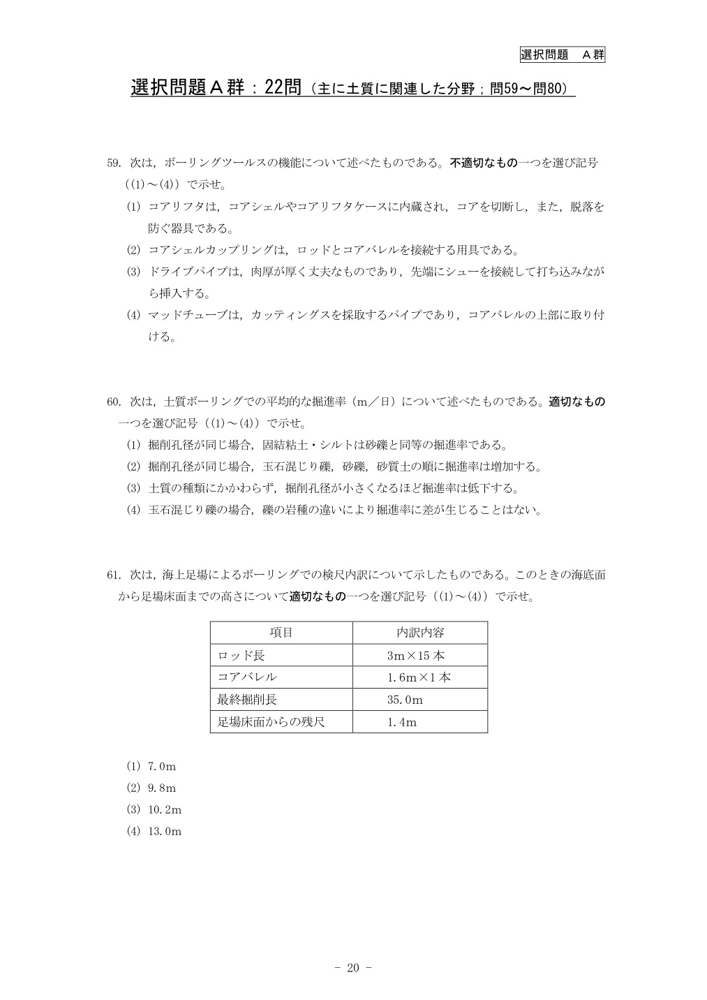
問60
A群（土質）
60. 次は，土質ボーリングでの平均的な掘進率（ｍ／日）について述べたものである。適切なもの
一つを選び記号（(1)～(4)）で示せ。
(1) 掘削孔径が同じ場合，固結粘土・シルトは砂礫と同等の掘進率である。
(2) 掘削孔径が同じ場合，玉石混じり礫，砂礫，砂質土の順に掘進率は増加する。
(3) 土質の種類にかかわらず，掘削孔径が小さくなるほど掘進率は低下する。
(4) 玉石混じり礫の場合，礫の岩種の違いにより掘進率に差が生じることはない。
図表・イラスト確認用：PDF紙面（20ページ）を表示
問61
A群（土質）
61. 次は，海上足場によるボーリングでの検尺内訳について示したものである。このときの海底面
から足場床面までの高さについて適切なもの一つを選び記号（(1)～(4)）で示せ。
項目
内訳内容
ロッド長
3ｍ×15 本
コアバレル
1.6ｍ×1 本
最終掘削長
35.0ｍ
足場床面からの残尺
1.4ｍ
(1) 7.0ｍ
(2) 9.8ｍ
(3) 10.2ｍ
(4) 13.0ｍ
- 21 -
選択問題 Ａ群
図表・イラスト確認用：PDF紙面（20ページ）を表示
問62
A群（土質）
62. 次は，未固結層を掘削中のコア詰りについて述べたものである。適切なもの一つを選び記号
（(1)～(4)）で示せ。
(1) コア詰りが生じると，一般に回転トルクおよび掘進速度は低下する。
(2) コア詰りが生じた場合，ビットの上げ下げを繰り返しながら荷重を増して掘進する。
(3) ロッドのバイブレーションが多少あった方が，コア詰りが生じにくい。
(4) コア詰りはコアキャッチャー内で生じやすく，コアバレル内では生じにくい。
図表・イラスト確認用：PDF紙面（21ページ）を表示
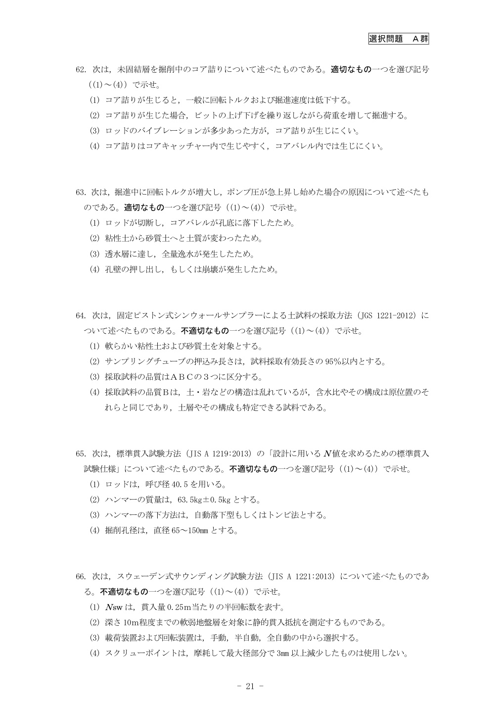
問63
A群（土質）
63．次は，掘進中に回転トルクが増大し，ポンプ圧が急上昇し始めた場合の原因について述べたも
のである。適切なもの一つを選び記号（(1)～(4)）で示せ。
(1) ロッドが切断し，コアバレルが孔底に落下したため。
(2) 粘性土から砂質土へと土質が変わったため。
(3) 透水層に達し，全量逸水が発生したため。
(4) 孔壁の押し出し，もしくは崩壊が発生したため。
図表・イラスト確認用：PDF紙面（21ページ）を表示
問64
A群（土質）
64. 次は，固定ピストン式シンウォールサンプラーによる土試料の採取方法（JGS 1221-2012）に
ついて述べたものである。不適切なもの一つを選び記号（(1)～(4)）で示せ。
(1) 軟らかい粘性土および砂質土を対象とする。
(2) サンプリングチューブの押込み長さは，試料採取有効長さの95％以内とする。
(3) 採取試料の品質はＡＢＣの３つに区分する。
(4) 採取試料の品質Ｂは，土・岩などの構造は乱れているが，含水比やその構成は原位置のそ
れらと同じであり，土層やその構成も特定できる試料である。
図表・イラスト確認用：PDF紙面（21ページ）を表示
問65
A群（土質）
65．次は，標準貫入試験方法（JIS A 1219:2013）の「設計に用いるN 値を求めるための標準貫入
試験仕様」について述べたものである。不適切なもの一つを選び記号（(1)～(4)）で示せ。
(1) ロッドは，呼び径40.5 を用いる。
(2) ハンマーの質量は，63.5kg±0.5kg とする。
(3) ハンマーの落下方法は，自動落下型もしくはトンビ法とする。
(4) 掘削孔径は，直径65～150mm とする。
図表・イラスト確認用：PDF紙面（21ページ）を表示
問66
A群（土質）
66. 次は，スウェーデン式サウンディング試験方法（JIS A 1221:2013）について述べたものであ
る。不適切なもの一つを選び記号（(1)～(4)）で示せ。
(1) N sw は，貫入量0.25ｍ当たりの半回転数を表す。
(2) 深さ10ｍ程度までの軟弱地盤層を対象に静的貫入抵抗を測定するものである。
(3) 載荷装置および回転装置は，手動，半自動，全自動の中から選択する。
(4) スクリューポイントは，摩耗して最大径部分で3mm 以上減少したものは使用しない。
- 22 -
選択問題 Ａ群
図表・イラスト確認用：PDF紙面（21ページ）を表示
問67
A群（土質）
67. 次は，電気式コーン貫入試験方法（JGS 1435-2012）について述べたものである。不適切なも
の一つを選び記号（(1)～(4)）で示せ。
(1) 玉石や砂礫以外の砂質土，粘性土，有機質土などの土質に適用可能である。
(2) 貫入速度は，20mm/ｓ±5mm/ｓを標準とする。
(3) フリクションカッターは，ロッドに作用する摩擦を低減するものである。
(4) 測定コーン貫入抵抗qc は，コーンに作用する荷重Ｑc にコーンの底部面積Ａc を乗じた値
である。
図表・イラスト確認用：PDF紙面（22ページ）を表示
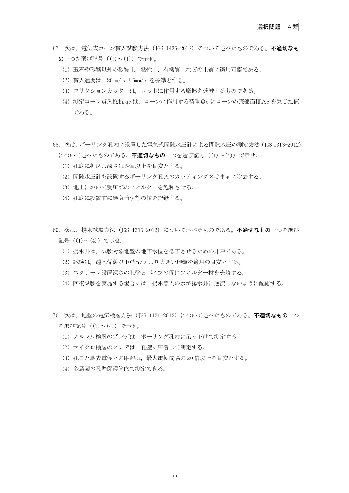
問68
A群（土質）
68. 次は，ボーリング孔内に設置した電気式間隙水圧計による間隙水圧の測定方法（JGS 1313-2012）
について述べたものである。不適切なもの一つを選び記号（(1)～(4)）で示せ。
(1) 孔底に押込む深さは5cm 以上を目安とする。
(2) 間隙水圧計を設置するボーリング孔底のカッティングスは事前に除去する。
(3) 地上において受圧部のフィルターを飽和させる。
(4) 孔底に設置前に無負荷状態の値を記録する。
図表・イラスト確認用：PDF紙面（22ページ）を表示
問69
A群（土質）
69. 次は，揚水試験方法（JGS 1315-2012）について述べたものである。不適切なもの一つを選び
記号（(1)～(4)）で示せ。
(1) 揚水井は，試験対象地盤の地下水位を低下させるための井戸である。
(2) 試験は，透水係数が10-8ｍ/ｓより大きい地盤を適用の目安とする。
(3) スクリーン設置深さの孔壁とパイプの間にフィルター材を充填する。
(4) 回復試験を実施する場合には，揚水管内の水が揚水井に逆流しないように配慮する。
図表・イラスト確認用：PDF紙面（22ページ）を表示
問70
A群（土質）
70. 次は，地盤の電気検層方法（JGS 1121-2012）について述べたものである。不適切なもの一つ
を選び記号（(1)～(4)）で示せ。
(1) ノルマル検層のゾンデは，ボーリング孔内に吊り下げて測定する。
(2) マイクロ検層のゾンデは，孔壁に圧着して測定する。
(3) 孔口と地表電極との距離は，最大電極間隔の20 倍以上を目安とする。
(4) 金属製の孔壁保護管内で測定できる。
- 23 -
選択問題 Ａ群
図表・イラスト確認用：PDF紙面（22ページ）を表示
問71
A群（土質）
71. N 値と砂の相対密度の関係（Terzaghi and Peck）をもとに，実測N 値に対応する相対密度を
示したものである。不適切なもの一つを選び記号（(1)～(4)）で示せ。
記号
N 値
相対密度
(1)
(2)
(3)
(4)
2
8
32
48
非常に緩い
緩い
中位の
密な
図表・イラスト確認用：PDF紙面（23ページ）を表示
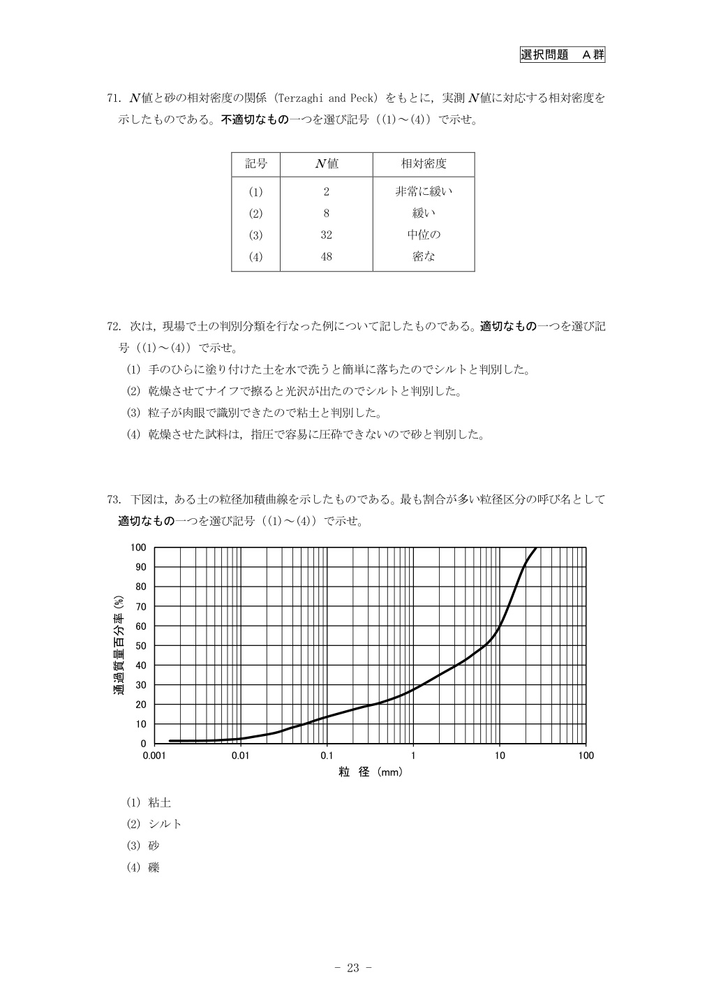
問72
A群（土質）
72. 次は，現場で土の判別分類を行なった例について記したものである。適切なもの一つを選び記
号（(1)～(4)）で示せ。
(1) 手のひらに塗り付けた土を水で洗うと簡単に落ちたのでシルトと判別した。
(2) 乾燥させてナイフで擦ると光沢が出たのでシルトと判別した。
(3) 粒子が肉眼で識別できたので粘土と判別した。
(4) 乾燥させた試料は，指圧で容易に圧砕できないので砂と判別した。
図表・イラスト確認用：PDF紙面（23ページ）を表示
問73
A群（土質）
73. 下図は，ある土の粒径加積曲線を示したものである。最も割合が多い粒径区分の呼び名として
適切なもの一つを選び記号（(1)～(4)）で示せ。
(1) 粘土
(2) シルト
(3) 砂
(4) 礫
0
10
20
30
40
50
60
70
80
90
100
0.001
0.01
0.1
1
10
100
通過質量百分率(%)
粒径(mm)
- 24 -
選択問題 Ａ群
図表・イラスト確認用：PDF紙面（23ページ）を表示
問74
A群（土質）
74. 次は，細粒土の工学的分類体系(JGS 0051-2009)について述べたものである。不適切なもの一
つを選び記号（(1)～(4)）で示せ。
(1) 低液性限界のシルト(ML)とは，液性限界40％未満のものを表す。
(2) 細粒土とは，細粒分が50％以上の土のことである。
(3) シルト｛M｝と粘土｛C｝は塑性図上において分類される。
(4) 高有機質土のうち，分解が進み黒色を呈するものは黒泥(Mk)に分類される。
図表・イラスト確認用：PDF紙面（24ページ）を表示
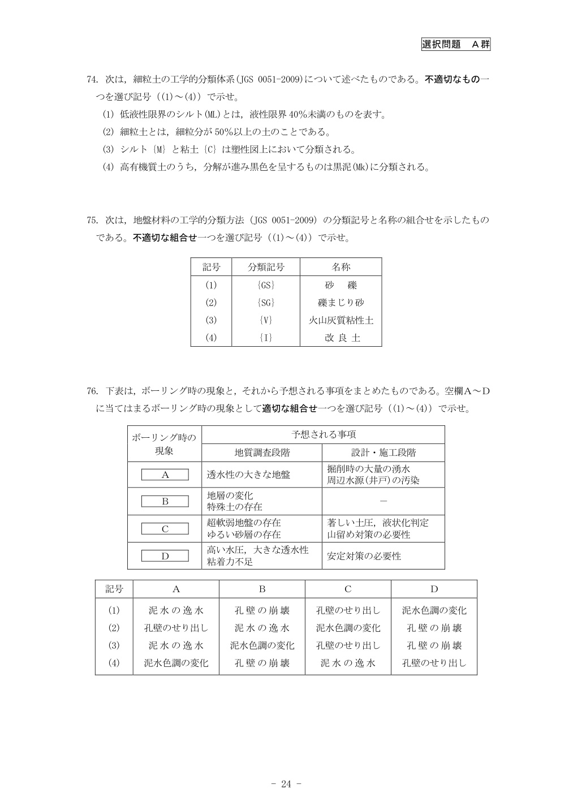
問75
A群（土質）
75. 次は，地盤材料の工学的分類方法（JGS 0051-2009）の分類記号と名称の組合せを示したもの
である。不適切な組合せ一つを選び記号（(1)～(4)）で示せ。
記号
分類記号
名称
(1)
(2)
(3)
(4)
｛GS｝
｛SG｝
｛V｝
｛I｝
砂
礫
礫まじり砂
火山灰質粘性土
改良土
図表・イラスト確認用：PDF紙面（24ページ）を表示
問76
A群（土質）
76. 下表は，ボーリング時の現象と，それから予想される事項をまとめたものである。空欄Ａ～Ｄ
に当てはまるボーリング時の現象として適切な組合せ一つを選び記号（(1)～(4)）で示せ。
ボーリング時の
現象
予想される事項
地質調査段階
設計・施工段階
Ａ
透水性の大きな地盤
掘削時の大量の湧水
周辺水源(井戸)の汚染
Ｂ
地層の変化
特殊土の存在
－
Ｃ
超軟弱地盤の存在
ゆるい砂層の存在
著しい土圧，液状化判定
山留め対策の必要性
Ｄ
高い水圧，大きな透水性
粘着力不足
安定対策の必要性
記号
Ａ
Ｂ
Ｃ
Ｄ
(1)
(2)
(3)
(4)
泥水の逸水
孔壁のせり出し
泥水の逸水
泥水色調の変化
孔壁の崩壊
泥水の逸水
泥水色調の変化
孔壁の崩壊
孔壁のせり出し
泥水色調の変化
孔壁のせり出し
泥水の逸水
泥水色調の変化
孔壁の崩壊
孔壁の崩壊
孔壁のせり出し
- 25 -
選択問題 Ａ群
図表・イラスト確認用：PDF紙面（24ページ）を表示
問77
A群（土質）
77. 次は，地中レーダ探査の特徴を述べたものである。不適切なもの一つを選び記号（(1)～(4)）
で示せ。
(1) 探査可能深度は，地質条件や使用する測定器によるが2～3ｍ程度である。
(2) 探査の分解能は，3～10cm 程度である。
(3) 地下水面以下でも探査可能深度に変わりはない。
(4) 海水が浸入している地盤では電磁波の減衰が大きくなり探査可能深度が低下する。
図表・イラスト確認用：PDF紙面（25ページ）を表示
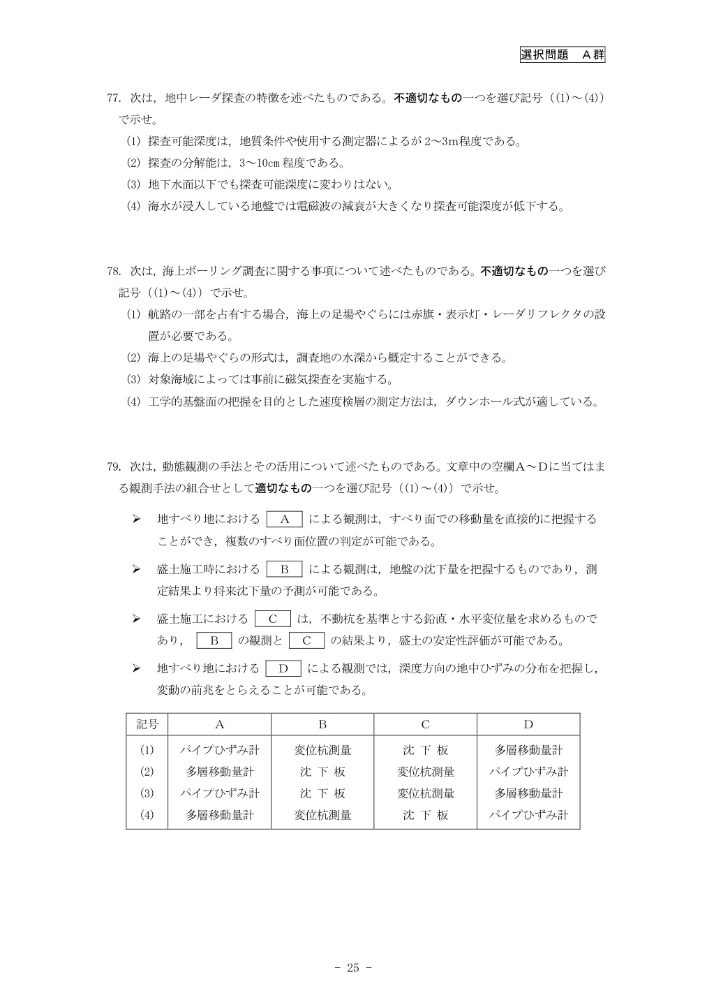
問78
A群（土質）
78. 次は，海上ボーリング調査に関する事項について述べたものである。不適切なもの一つを選び
記号（(1)～(4)）で示せ。
(1) 航路の一部を占有する場合，海上の足場やぐらには赤旗・表示灯・レーダリフレクタの設
置が必要である。
(2) 海上の足場やぐらの形式は，調査地の水深から概定することができる。
(3) 対象海域によっては事前に磁気探査を実施する。
(4) 工学的基盤面の把握を目的とした速度検層の測定方法は，ダウンホール式が適している。
図表・イラスト確認用：PDF紙面（25ページ）を表示
問79
A群（土質）
79. 次は，動態観測の手法とその活用について述べたものである。文章中の空欄Ａ～Ｄに当てはま
る観測手法の組合せとして適切なもの一つを選び記号（(1)～(4)）で示せ。
地すべり地における Ａ による観測は，すべり面での移動量を直接的に把握する
ことができ，複数のすべり面位置の判定が可能である。
盛土施工時における Ｂ による観測は，地盤の沈下量を把握するものであり，測
定結果より将来沈下量の予測が可能である。
盛土施工における Ｃ は，不動杭を基準とする鉛直・水平変位量を求めるもので
あり， Ｂ の観測と Ｃ の結果より，盛土の安定性評価が可能である。
地すべり地における Ｄ による観測では，深度方向の地中ひずみの分布を把握し，
変動の前兆をとらえることが可能である。
記号
Ａ
Ｂ
Ｃ
Ｄ
(1)
(2)
(3)
(4)
パイプひずみ計
多層移動量計
パイプひずみ計
多層移動量計
変位杭測量
沈下板
沈下板
変位杭測量
沈下板
変位杭測量
変位杭測量
沈下板
多層移動量計
パイプひずみ計
多層移動量計
パイプひずみ計
- 26 -
選択問題 Ａ群
図表・イラスト確認用：PDF紙面（25ページ）を表示
問80
A群（土質）
80. 次は，乱れの少ない試料を用いて実施する土質試験を示したものである。不適切なもの一つを
選び記号（(1)～(4)）で示せ。
(1) 突固めによる土の締固め試験（JIS A 1210：2009）
(2) 土の段階載荷による圧密試験（JIS A 1217：2009）
(3) 土の一軸圧縮試験（JIS A 1216：2009）
(4) 土の湿潤密度試験（JIS A 1225：2009）
- 27 -
選択問題 Ｂ群
選択問題Ｂ群：22問（主に岩盤に関連した分野；問81～問102）
現場技術の知識 １８問、調査技術の理解度 ４問
図表・イラスト確認用：PDF紙面（26ページ）を表示
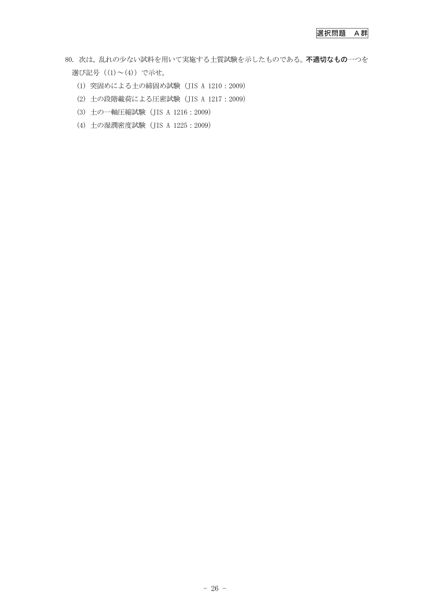
問81
B群（岩盤）
81. 次は，ダイヤモンドリーミングシェルについて述べたものである。不適切なもの一つを選び記
号（(1)～(4)）で示せ。
(1) セット外径は，ビットのセット外径と同等である。
(2) ビットの直上（後部）に接続して使用する。
(3) 掘削孔内で，掘削中のビットのセンター保持とバイブレーションを防止する。
(4) 外径が磨耗し孔径が縮小すると，抑留の原因となり得る。
図表・イラスト確認用：PDF紙面（27ページ）を表示
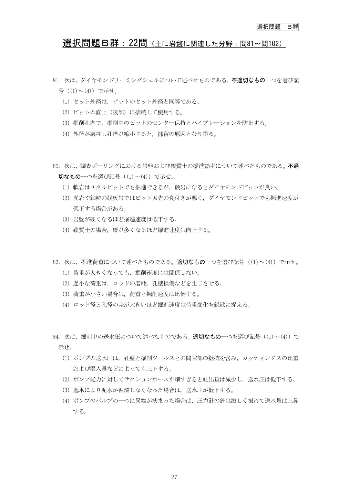
問82
B群（岩盤）
82. 次は，調査ボーリングにおける岩盤および礫質土の掘進効率について述べたものである。不適
切なもの一つを選び記号（(1)～(4)）で示せ。
(1) 軟岩はメタルビットでも掘進できるが，硬岩になるとダイヤモンドビットが良い。
(2) 泥岩や細粒の凝灰岩ではビット刃先の食付きが悪く，ダイヤモンドビットでも掘進速度が
低下する場合がある。
(3) 岩盤が硬くなるほど掘進速度は低下する。
(4) 礫質土の場合，礫が多くなるほど掘進速度は向上する。
図表・イラスト確認用：PDF紙面（27ページ）を表示
問83
B群（岩盤）
83. 次は，掘進荷重について述べたものである。適切なもの一つを選び記号（(1)～(4)）で示せ。
(1) 荷重が大きくなっても，掘削速度には関係しない。
(2) 過小な荷重は，ロッドの磨耗，孔壁損傷などを生じさせる。
(3) 荷重が小さい場合は，荷重と掘削速度は比例する。
(4) ロッド径と孔径の差が大きいほど掘進速度は荷重変化を鋭敏に捉える。
図表・イラスト確認用：PDF紙面（27ページ）を表示
問84
B群（岩盤）
84. 次は，掘削中の送水圧について述べたものである。適切なもの一つを選び記号（(1)～(4)）で
示せ。
(1) ポンプの送水圧は，孔壁と掘削ツールスとの間隙部の抵抗を含み，カッティングスの比重
および混入量などによっても上下する。
(2) ポンプ能力に対してサクションホースが細すぎると吐出量は減少し，送水圧は低下する。
(3) 逸水により泥水が循環しなくなった場合は，送水圧が低下する。
(4) ポンプのバルブの一つに異物が挟まった場合は，圧力計の針は激しく振れて送水量は上昇
する。
- 28 -
選択問題 Ｂ群
図表・イラスト確認用：PDF紙面（27ページ）を表示
問85
B群（岩盤）
85. 次は，掘進する地層と利用する泥水やその目的を組合せたものである。不適切な組合せ一つを
選び記号（(1)～(4)）で示せ。
記号
掘進地層
利用泥水・目的
(1)
崩壊しやすい膨潤性地層
良質な泥水
(2)
硬質礫を含んだ固結度の低い地層
未固結な砂礫層と同様の泥水
(3)
粘質地層
送水圧の上昇防止のための高粘度泥水
(4)
高圧のガスや水を含んだ地層
高比重泥水，セメントおよび薬液による噴出間
隙の充填
図表・イラスト確認用：PDF紙面（28ページ）を表示
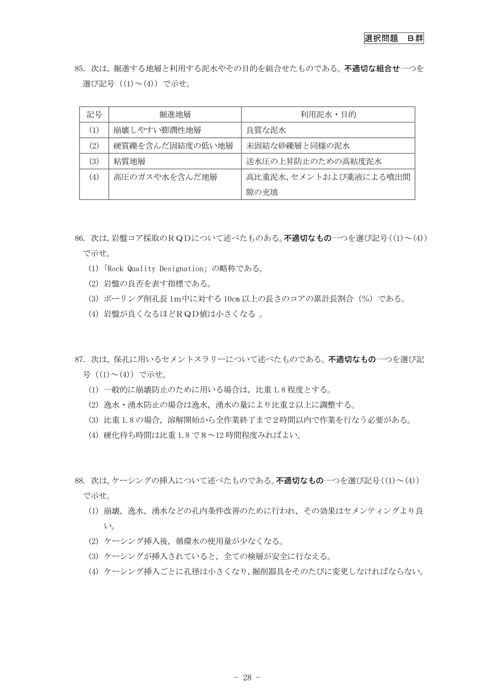
問86
B群（岩盤）
86. 次は，岩盤コア採取のＲＱＤについて述べたものある。不適切なもの一つを選び記号（(1)～(4)）
で示せ。
(1)「Rock Quality Designation」の略称である。
(2) 岩盤の良否を表す指標である。
(3) ボーリング削孔長1ｍ中に対する10cm 以上の長さのコアの累計長割合（％）である。
(4) 岩盤が良くなるほどＲＱＤ値は小さくなる 。
図表・イラスト確認用：PDF紙面（28ページ）を表示
問87
B群（岩盤）
87. 次は，保孔に用いるセメントスラリーについて述べたものである。不適切なもの一つを選び記
号（(1)～(4)）で示せ。
(1) 一般的に崩壊防止のために用いる場合は，比重1.8 程度とする。
(2) 逸水・湧水防止の場合は逸水，湧水の量により比重２以上に調整する。
(3) 比重1.8 の場合，溶解開始から全作業終了まで２時間以内で作業を行なう必要がある。
(4) 硬化待ち時間は比重1.8 で８～12 時間程度みればよい。
図表・イラスト確認用：PDF紙面（28ページ）を表示
問88
B群（岩盤）
88. 次は，ケーシングの挿入について述べたものである。不適切なもの一つを選び記号（(1)～(4)）
で示せ。
(1) 崩壊，逸水，湧水などの孔内条件改善のために行われ，その効果はセメンティングより良
い。
(2) ケーシング挿入後，循環水の使用量が少なくなる。
(3) ケーシングが挿入されていると，全ての検層が安全に行なえる。
(4) ケーシング挿入ごとに孔径は小さくなり，掘削器具をそのたびに変更しなければならない。
- 29 -
選択問題 Ｂ群
図表・イラスト確認用：PDF紙面（28ページ）を表示
問89
B群（岩盤）
89. 次は，工事用グラウトボーリングについて述べたものである。不適切なもの一つを選び記号
（(1)～(4)）で示せ。
(1) 地すべり防止・法面補強工事などの際に行われる。
(2) 地盤の止水・改良強化・軟弱地盤改良のために行われる。
(3) ダムやトンネルにおける補助工法として行われる。
(4) 地山の間隙や空洞などに固化材を充填するために行われる。
図表・イラスト確認用：PDF紙面（29ページ）を表示
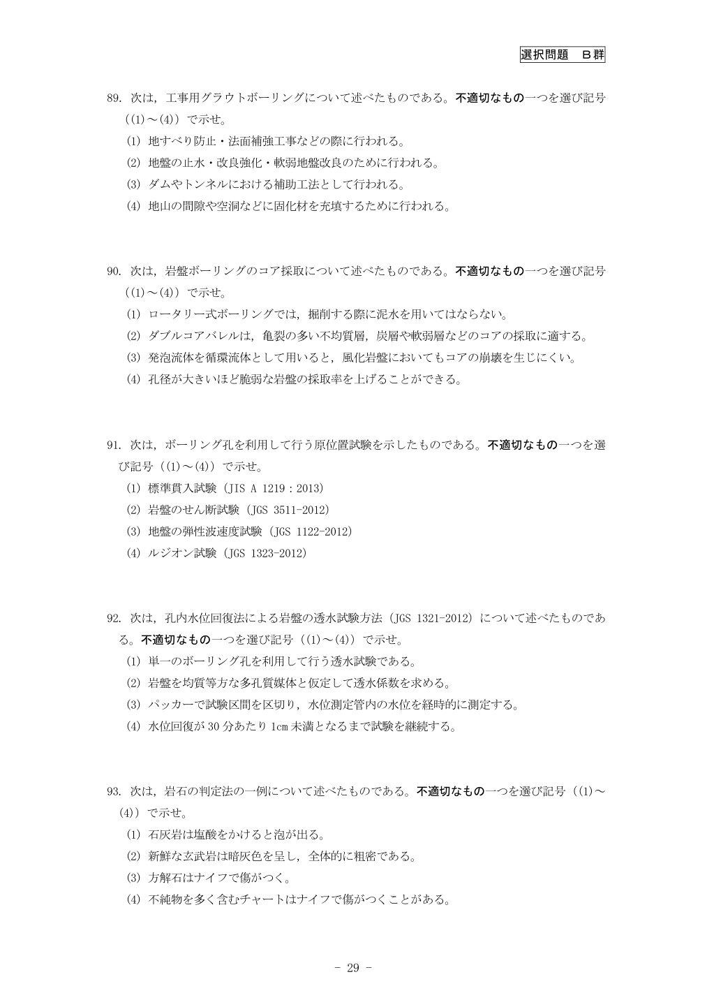
問90
B群（岩盤）
90. 次は，岩盤ボーリングのコア採取について述べたものである。不適切なもの一つを選び記号
（(1)～(4)）で示せ。
(1) ロータリー式ボーリングでは，掘削する際に泥水を用いてはならない。
(2) ダブルコアバレルは，亀裂の多い不均質層，炭層や軟弱層などのコアの採取に適する。
(3) 発泡流体を循環流体として用いると，風化岩盤においてもコアの崩壊を生じにくい。
(4) 孔径が大きいほど脆弱な岩盤の採取率を上げることができる。
図表・イラスト確認用：PDF紙面（29ページ）を表示
問91
B群（岩盤）
91. 次は，ボーリング孔を利用して行う原位置試験を示したものである。不適切なもの一つを選
び記号（(1)～(4)）で示せ。
(1) 標準貫入試験（JIS A 1219：2013）
(2) 岩盤のせん断試験（JGS 3511-2012）
(3) 地盤の弾性波速度試験（JGS 1122-2012）
(4) ルジオン試験（JGS 1323-2012）
図表・イラスト確認用：PDF紙面（29ページ）を表示
問92
B群（岩盤）
92. 次は，孔内水位回復法による岩盤の透水試験方法（JGS 1321-2012）について述べたものであ
る。不適切なもの一つを選び記号（(1)～(4)）で示せ。
(1) 単一のボーリング孔を利用して行う透水試験である。
(2) 岩盤を均質等方な多孔質媒体と仮定して透水係数を求める。
(3) パッカーで試験区間を区切り，水位測定管内の水位を経時的に測定する。
(4) 水位回復が30 分あたり1cm 未満となるまで試験を継続する。
図表・イラスト確認用：PDF紙面（29ページ）を表示
問93
B群（岩盤）
93. 次は，岩石の判定法の一例について述べたものである。不適切なもの一つを選び記号（(1)～
(4)）で示せ。
(1) 石灰岩は塩酸をかけると泡が出る。
(2) 新鮮な玄武岩は暗灰色を呈し，全体的に粗密である。
(3) 方解石はナイフで傷がつく。
(4) 不純物を多く含むチャートはナイフで傷がつくことがある。
- 30 -
選択問題 Ｂ群
図表・イラスト確認用：PDF紙面（29ページ）を表示
問94
B群（岩盤）
94. 次は，岩石の分類と岩種区分について述べたものである。不適切なもの一つを選び記号（(1)
～(4)）で示せ。
(1) 岩石の鑑定および記載には，岩石や鉱物の成因，鉱物組成や岩石組織などの地質学や岩石
学についての幅広い知識が必要である。
(2) 岩石の肉眼鑑定で判断に迷う場合は，顕微鏡観察やX 線分析などを行う。
(3) 火砕流は，マグマ起源の高温のガス体や熔融体，破片化した固形物が混じり合って流出す
る火山噴出物の一種である。
(4) 砕屑岩は，粒度によって小さい方から，シルト岩，粘土岩，砂岩，礫岩に分けられる。
図表・イラスト確認用：PDF紙面（30ページ）を表示
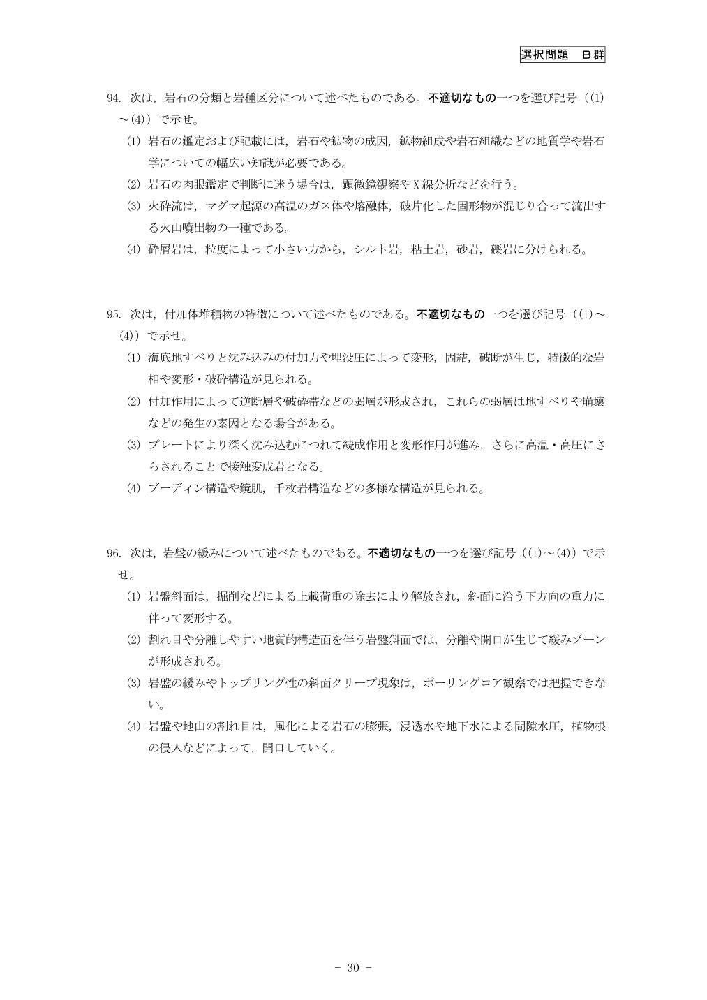
問95
B群（岩盤）
95. 次は，付加体堆積物の特徴について述べたものである。不適切なもの一つを選び記号（(1)～
(4)）で示せ。
(1) 海底地すべりと沈み込みの付加力や埋没圧によって変形，固結，破断が生じ，特徴的な岩
相や変形・破砕構造が見られる。
(2) 付加作用によって逆断層や破砕帯などの弱層が形成され，これらの弱層は地すべりや崩壊
などの発生の素因となる場合がある。
(3) プレートにより深く沈み込むにつれて続成作用と変形作用が進み，さらに高温・高圧にさ
らされることで接触変成岩となる。
(4) ブーディン構造や鏡肌，千枚岩構造などの多様な構造が見られる。
図表・イラスト確認用：PDF紙面（30ページ）を表示
問96
B群（岩盤）
96. 次は，岩盤の緩みについて述べたものである。不適切なもの一つを選び記号（(1)～(4)）で示
せ。
(1) 岩盤斜面は，掘削などによる上載荷重の除去により解放され，斜面に沿う下方向の重力に
伴って変形する。
(2) 割れ目や分離しやすい地質的構造面を伴う岩盤斜面では，分離や開口が生じて緩みゾーン
が形成される。
(3) 岩盤の緩みやトップリング性の斜面クリープ現象は，ボーリングコア観察では把握できな
い。
(4) 岩盤や地山の割れ目は，風化による岩石の膨張，浸透水や地下水による間隙水圧，植物根
の侵入などによって，開口していく。
- 31 -
選択問題 Ｂ群
図表・イラスト確認用：PDF紙面（30ページ）を表示
問97
B群（岩盤）
97. 次は，火山岩に含まれる主な有色鉱物の特徴について記載したものである。文章中の空欄ア～
エに当てはまる鉱物の名称の適切な組合せ一つを選び記号（(1)～(4)）で示せ。
火山岩に含まれる主な有色鉱物の特徴
鉱 物
特 徴
ア
黒～黒緑色を呈し，風化すると鉄分が溶出し，赤錆が付着する。セル
ロイドのような光沢があり，六角板状で鱗片状に剥がれやすい。
イ
黒～濃い緑色で ア に似ているが，光沢が鋭く金属的に光る。
細長い柱状形で壁開面が二面でき，120°の角が形成される。
ウ
赤褐～淡緑色を呈し，短柱状形で壁開面が二面でき90°の角が形成さ
れる。 イ ほど柱面の発達が無く，風化しても透明度が良い。
エ
黄緑～緑褐色（オリーブ色）でやや丸みを帯びている。 ウ のよ
うに壁開が強くない。
記号
ア
イ
ウ
エ
(1)
(2)
(3)
(4)
黒雲母
長
石
輝
石
黒雲母
角閃石
カンラン石
角閃石
カンラン石
輝
石
輝
石
黒雲母
石
英
カンラン石
角閃石
カンラン石
角閃石
図表・イラスト確認用：PDF紙面（31ページ）を表示
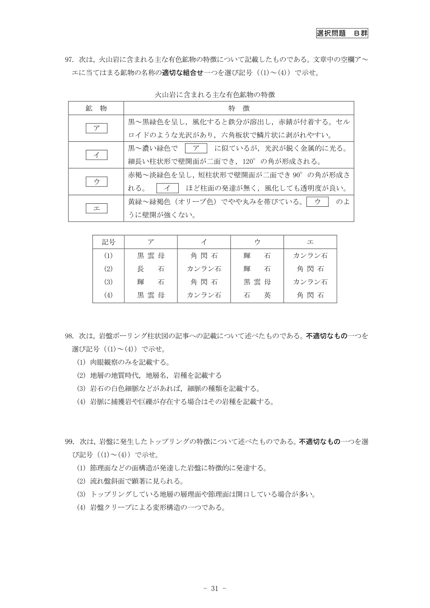
問98
B群（岩盤）
98. 次は，岩盤ボーリング柱状図の記事への記載について述べたものである。不適切なもの一つを
選び記号（(1)～(4)）で示せ。
(1) 肉眼観察のみを記載する。
(2) 地層の地質時代，地層名，岩種を記載する
(3) 岩石の白色細脈などがあれば，細脈の種類を記載する。
(4) 岩脈に捕獲岩や巨礫が存在する場合はその岩種を記載する。
図表・イラスト確認用：PDF紙面（31ページ）を表示
問99
B群（岩盤）
99. 次は，岩盤に発生したトップリングの特徴について述べたものである。不適切なもの一つを選
び記号（(1)～(4)）で示せ。
(1) 節理面などの面構造が発達した岩盤に特徴的に発達する。
(2) 流れ盤斜面で顕著に見られる。
(3) トップリングしている地層の層理面や節理面は開口している場合が多い。
(4) 岩盤クリープによる変形構造の一つである。
- 32 -
選択問題 Ｂ群
図表・イラスト確認用：PDF紙面（31ページ）を表示
問100
B群（岩盤）
100. 次は，調査目的と調査計画について述べたものである。不適切なもの一つを選び記号（(1)
～(4)）で示せ。
(1) ボーリング調査位置の決定など，詳細な地質調査計画を策定するため，地質踏査を計画し
た。
(2) 岩盤の硬軟を判断するため，電気探査を計画した。
(3) トンネルの地山分類を行うため，屈折法地震探査（弾性波探査屈折法）を計画した。
(4) 堆積岩の層構造の連続性を把握するため，反射法地震探査（弾性波探査反射法）を計画し
た。
図表・イラスト確認用：PDF紙面（32ページ）を表示
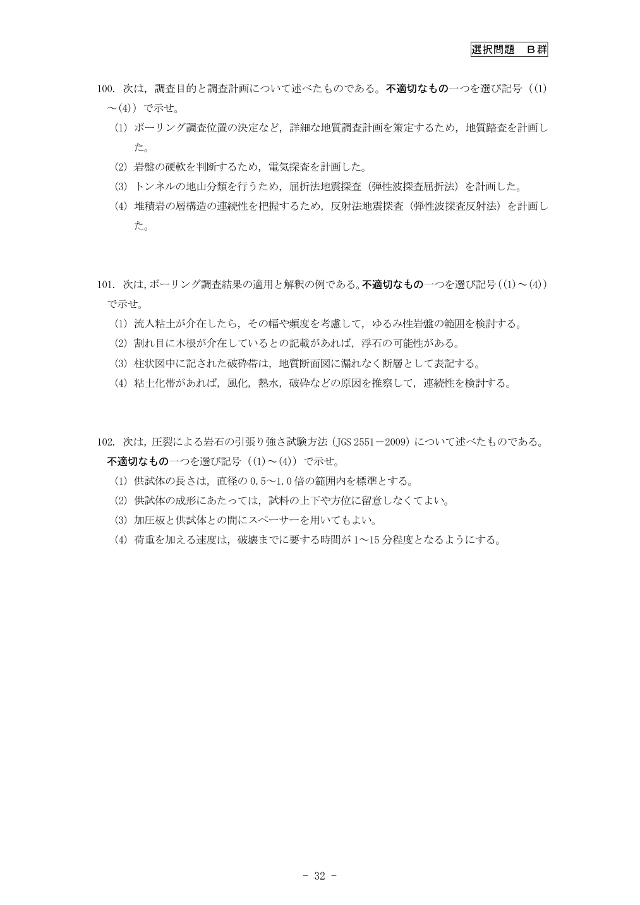
問101
B群（岩盤）
101. 次は，ボーリング調査結果の適用と解釈の例である。不適切なもの一つを選び記号（(1)～(4)）
で示せ。
(1) 流入粘土が介在したら，その幅や頻度を考慮して，ゆるみ性岩盤の範囲を検討する。
(2) 割れ目に木根が介在しているとの記載があれば，浮石の可能性がある。
(3) 柱状図中に記された破砕帯は，地質断面図に漏れなく断層として表記する。
(4) 粘土化帯があれば，風化，熱水，破砕などの原因を推察して，連続性を検討する。
図表・イラスト確認用：PDF紙面（32ページ）を表示
問102
B群（岩盤）
102. 次は，圧裂による岩石の引張り強さ試験方法（JGS 2551－2009）について述べたものである。
不適切なもの一つを選び記号（(1)～(4)）で示せ。
(1) 供試体の長さは，直径の0.5～1.0 倍の範囲内を標準とする。
(2) 供試体の成形にあたっては，試料の上下や方位に留意しなくてよい。
(3) 加圧板と供試体との間にスペーサーを用いてもよい。
(4) 荷重を加える速度は，破壊までに要する時間が1～15 分程度となるようにする。
- 33 -
必須問題
Ⅶ．記述式問題 (2問)
以下の問いに対する解答を答案用紙（その２）に記述せよ。
第１問
ボーリングマシンの作業前点検について，下記の機械装置の中から３つ選び，点検項目をそれ
ぞれ２つ記述せよ。
機械装置： 1.機体， 2.操縦装置， 3.給油脂・計器， 4.電気系統， 5.原動機
第２問
乱れの少ない試料（粘性土試料および細粒分含有率が数％の砂質土試料）について，試料採取直
後から試験室へ試料を搬出するまでの間の，現地での試料処理・取扱方法に関する注意事項を６つ
記述せよ。なお，粘性土・砂質土試料に共通する事項，どちらか一方に関する事項のいずれでも可
とする。